Chapter 12 Final Project: Analyzing RNAseq Data from GEO
12.1 Final Project Overview
In this final project, we will work with RNAseq data obtained from the GEO database, specifically the dataset with ITPR3 and RELB knockout in the SW480 cell line under varying oxygen conditions. Our primary objectives are to clean and prepare the metadata, identify differentially expressed genes, explore data distribution, and visualize gene expression patterns.
The steps we’ll take:
To start, we will download the RNAseq count table and the associated metadata. With the help of the
dplyrpackage in R, we will clean and organize the metadata. Our focus will be on selecting and subsetting the samples that are most relevant to our analysis - specifically, two wild-type samples under normoxia and two under hypoxia. For the initial phase of the project, we will disregard knockout samples to simplify our analysis.Next, we will delve into exploring the RNAseq count matrix. Without considering knockout samples, we will calculate essential summary statistics to gain insights into gene expression levels’ variability and distribution between the two conditions - normoxia and hypoxia.
After understanding the dataset’s characteristics, we will proceed to identify differentially expressed genes. This step is crucial for uncovering genes that exhibit significant expression changes in response to varying oxygen levels. We will utilize well-established tool,
DESeq2, to perform differential gene expression analysis.Following the identification of differentially expressed genes, we will continue exploring the count matrix by calculating summary statistics specifically for these genes. This allows us to gain a deeper understanding of how their expression patterns differ between normoxia and hypoxia conditions.
To visualize data p-value distribution more effectively, we will create histograms. These histograms will offer a visual representation of how p values are distributed.
Additionally, we will use boxplots to compare gene expression levels between normoxia and hypoxia. Boxplots provide a concise summary of the data’s central tendency, spread, and potential outliers, aiding in the identification of expression differences.
Principal Component Analysis (PCA) will be employed to obtain insights into the overall structure of the data and any potential clustering patterns. This dimensionality reduction technique will help us visualize how samples group based on their gene expression profiles.
Finally, we will create a heatmap using R. This heatmap will visualize the expression patterns of the identified differentially expressed genes across samples, providing a comprehensive view of how these genes respond to changes in oxygen levels in the SW480 cell line.
In summary, this project will take us through the full process of RNAseq data analysis, focusing on the hypoxia vs normoxia comparison in the SW480 cell line. We’ll clean the data, pinpoint differentially expressed genes, explore their distributions, and visualize gene expression patterns.
Are you ready? Let’s go!
12.2 How to pre-process RNAseq data
This is a bonus section on how to pre-process RNAseq data. In this course, we mainly focus on how to analyze RNAseq data for downstream analysis. We will start with a count matrix (next lesson) downloaded from GEO.
However, in real-world data analysis, sequencing data comes as a FASTQ file. FASTQ files are just normal text files with 4 lines for each read. Go to the link to understand the format.
Watch this video:
12.2.1 RNAseq pre-processing steps
The first step is to do Quality control of the FASTQ files using FASTQC.
Trim adaptors and low-quality bases using tools such as trimmomatic or fastp. Trimming of the reads is optional.
Align the reads to transcriptome using
STAR. The single-cell RNAseq version is called STAR-solo from the same lab.Quantify the number of reads fall into each gene using FeatureCounts.
I have written a Snakemake pipeline to pre-process RNAseq fastq file to get a count matrix at https://github.com/crazyhottommy/pyflow-RNAseq
The bash script to align the fastq files to transcriptome using STAR:
STAR --runMode alignReads \
--runThreadN 5 \
--genomeDir /path/to/the/STAR/index \
--genomeLoad NoSharedMemory \
--readFilesIn mysample_R1.fastq.gz mysample_R2.fastq.gz \
--readFilesCommand zcat \
--twopassMode Basic \
--runRNGseed 777 \
--outFilterType Normal \
--outFilterMultimapNmax 20 \
--outFilterMismatchNmax 10 \
--outFilterMultimapScoreRange 1 \
--outFilterMatchNminOverLread 0.33 \
--outFilterScoreMinOverLread 0.33 \
--outReadsUnmapped None \
--alignIntronMin 20 \
--alignIntronMax 500000 \
--alignMatesGapMax 1000000 \
--alignSJoverhangMin 8 \
--alignSJstitchMismatchNmax 5 -1 5 5 \
--sjdbScore 2 \
--alignSJDBoverhangMin 1 \
--sjdbOverhang 100 \
--chimSegmentMin 20 \
--chimJunctionOverhangMin 20 \
--chimSegmentReadGapMax 3 \
--quantMode GeneCounts \
--outMultimapperOrder Random \
--outSAMstrandField intronMotif \
--outSAMattributes All \
--outSAMunmapped Within KeepPairs \
--outSAMtype BAM Unsorted \
--limitBAMsortRAM 30000000000 \
--outSAMmode Full \
--outSAMheaderHD @HD VN:1.4 \
--outFileNamePrefix mysampleThen quantifying using FeatureCounts:
featureCounts -T 5 -p -t exon -g gene_id -a gene.gtf -o mysample_featureCount.txt mysampleAligned.out.bammysample_featureCount.txt will be a count table for one sample.
Alternative Alignment-free RNAseq quantification tools such as salmon and kallisto are also very popular. I recommend you to read the tutorial of STAR, FeatureCounts, salmon and kallisto to learn how to use those command line tools.
12.2.2 How to use salmon to preprocess GEO fastq to counts
Please refer to this blog post and this youtube video if you want to learn more:
12.3 Download and subset Count Matrix
In this lesson, you will learn how to explore a count matrix in R, a common task in data analysis. We’ll cover downloading the data, reading it into R, examining the data’s dimensions and column names, subsetting the data, converting it into a matrix, and adding row names.
12.3.1 Downloading the Count Matrix
To begin, we need to download the count matrix, which is a tab-separated values (TSV) file containing gene expression data. You can obtain it from the following FTP address: https://ftp.ncbi.nlm.nih.gov/geo/series/GSE197nnn/GSE197576/suppl/GSE197576_raw_gene_counts_matrix.tsv.gz
You can use the wget command in Unix to download the processed count matrix file as follows:
wget https://ftp.ncbi.nlm.nih.gov/geo/series/GSE197nnn/GSE197576/suppl/GSE197576_raw_gene_counts_matrix.tsv.gzIf you don’t have access to a Unix-like command-line environment, you can download the file manually through your web browser. Simply open your web browser and go to the following URL: https://ftp.ncbi.nlm.nih.gov/geo/series/GSE197nnn/GSE197576/suppl/GSE197576_raw_gene_counts_matrix.tsv.gz
12.3.2 Reading the Count Matrix in R
Now that you have the data, let’s read it into R using the readr package. The first step is to load the required libraries and read the TSV file:
12.3.3 Examining the Data
It’s crucial to understand the data structure. We’ll start by examining the dimensions of the data and the column names:
## [1] 43809 13## [1] "gene" "01_SW_sgCTRL_Norm" "02_SW_sgCTRL_Norm"
## [4] "03_SW_sgITPR3_1_Norm" "04_SW_sgITPR3_1_Norm" "07_SW_sgRELB_3_Norm"
## [7] "08_SW_sgRELB_3_Norm" "11_SW_sgCTRL_Hyp" "12_SW_sgCTRL_Hyp"
## [10] "13_SW_sgITPR3_1_Hyp" "14_SW_sgITPR3_1_Hyp" "17_SW_sgRELB_3_Hyp"
## [13] "18_SW_sgRELB_3_Hyp"The first six rows:
## # A tibble: 6 × 13
## gene `01_SW_sgCTRL_Norm` `02_SW_sgCTRL_Norm` `03_SW_sgITPR3_1_Norm`
## <chr> <dbl> <dbl> <dbl>
## 1 DDX11L1 0 0 0
## 2 WASH7P 18 11 28
## 3 MIR6859-1 5 1 6
## 4 MIR1302-2HG 0 0 0
## 5 MIR1302-2 0 0 0
## 6 FAM138A 0 0 0
## # ℹ 9 more variables: `04_SW_sgITPR3_1_Norm` <dbl>,
## # `07_SW_sgRELB_3_Norm` <dbl>, `08_SW_sgRELB_3_Norm` <dbl>,
## # `11_SW_sgCTRL_Hyp` <dbl>, `12_SW_sgCTRL_Hyp` <dbl>,
## # `13_SW_sgITPR3_1_Hyp` <dbl>, `14_SW_sgITPR3_1_Hyp` <dbl>,
## # `17_SW_sgRELB_3_Hyp` <dbl>, `18_SW_sgRELB_3_Hyp` <dbl>Notice that the first column name is the gene name, and the other 12 columns are the sample names.
12.3.4 Subsetting the Data
Next, let’s narrow down our data to the specific samples we need for comparison. To do this, we’ll create a logical vector by matching column names that contain “sgCTRL†or “gene”:
## [1] TRUE TRUE TRUE FALSE FALSE FALSE FALSE TRUE TRUE FALSE FALSE FALSE
## [13] FALSEThe stringr::str_detect function searches for patterns in the column names. The resulting columns_to_select variable is a logical vector that helps us select the relevant columns.
Now, let’s use this logical vector to subset the data frame:
## # A tibble: 6 × 5
## gene `01_SW_sgCTRL_Norm` `02_SW_sgCTRL_Norm` `11_SW_sgCTRL_Hyp`
## <chr> <dbl> <dbl> <dbl>
## 1 DDX11L1 0 0 0
## 2 WASH7P 18 11 23
## 3 MIR6859-1 5 1 8
## 4 MIR1302-2HG 0 0 1
## 5 MIR1302-2 0 0 0
## 6 FAM138A 0 0 0
## # ℹ 1 more variable: `12_SW_sgCTRL_Hyp` <dbl>12.3.5 Converting to a Matrix
To perform various analyses, it’s often more convenient to work with a matrix. We’ll remove the first column (gene names) and convert the data frame to a matrix:
#subset the dataframe by removing the first column using negative index
# and then use as.matrix to convert it to a matrix
raw_counts_mat<- counts_sub[, -1] %>%
as.matrix()
head(raw_counts_mat)## 01_SW_sgCTRL_Norm 02_SW_sgCTRL_Norm 11_SW_sgCTRL_Hyp 12_SW_sgCTRL_Hyp
## [1,] 0 0 0 0
## [2,] 18 11 23 45
## [3,] 5 1 8 12
## [4,] 0 0 1 0
## [5,] 0 0 0 0
## [6,] 0 0 0 0Here, we use the %>% (pipe) operator to perform multiple operations sequentially. The as.matrix() function converts the data frame to a matrix.
12.3.6 Adding Row Names
The matrix lacks row names, which can be crucial for identifying genes. We can add the gene names as row names:
## 01_SW_sgCTRL_Norm 02_SW_sgCTRL_Norm 11_SW_sgCTRL_Hyp
## DDX11L1 0 0 0
## WASH7P 18 11 23
## MIR6859-1 5 1 8
## MIR1302-2HG 0 0 1
## MIR1302-2 0 0 0
## FAM138A 0 0 0
## 12_SW_sgCTRL_Hyp
## DDX11L1 0
## WASH7P 45
## MIR6859-1 12
## MIR1302-2HG 0
## MIR1302-2 0
## FAM138A 0Now, our matrix has gene names associated with each row.
12.4 Calculate the total exon length per gene
We want to find the differentially expressed genes between hypoxia and normoxia. The ideal workflow is to use the DESeq2 R package, which models the count data with the negative binomial distribution. For now, let’s use a t-test to compare and we will use DESeq2 later.
However, because different samples have different sequencing depths, and different genes have different lengths, we must first normalize the counts to transcript per million (TPM).
12.4.1 Why Normalize Gene Counts to TPM?
When working with gene expression data, it’s essential to account for variations in sequencing depths (the number of reads obtained for each sample) and gene lengths (some genes are longer than others). Normalization helps ensure that our gene expression values are comparable across different samples and genes.
Transcript Per Million (TPM) is a commonly used normalization method in RNA-seq analysis. It scales the gene counts to a common unit (per million) based on gene length and sequencing depth.
The general process:
For each gene, we divide its raw count values by its total exon length. This step essentially converts the raw counts into counts per unit exon length.
We sum up the values for each column (sample). This calculation gives us the total counts for each sample.
For each gene in each sample, we divide the value obtained in Step 1 by the total count for that sample calculated in Step 2. This step scales the counts relative to the sequencing depth of each sample.
To bring the values to a common scale and make them more interpretable, we multiply the result from Step 3 by 1,000,000 (1e6). This step converts the values to TPM, where the final unit is “Transcripts Per Million.”
The normalization process ensures that the gene expression values are now comparable across different samples, making it easier to identify genes that are differentially expressed between conditions (e.g., hypoxia and normoxia).
12.4.2 Creating a function for normalization
Let’s write a function. Before that, we need to know the gene length of all the genes in the data frame.
We will use the Bioconductor package TxDb.Hsapiens.UCSC.hg19.knownGene to get the gene length, or more exactly, the total exon lengths for each gene (most of the RNAseq reads are from the exons).
#if (!require("BiocManager", quietly = TRUE))
# install.packages("BiocManager")
#BiocManager::install("TxDb.Hsapiens.UCSC.hg19.knownGene")
library(TxDb.Hsapiens.UCSC.hg19.knownGene)
TxDb.Hsapiens.UCSC.hg19.knownGene## TxDb object:
## # Db type: TxDb
## # Supporting package: GenomicFeatures
## # Data source: UCSC
## # Genome: hg19
## # Organism: Homo sapiens
## # Taxonomy ID: 9606
## # UCSC Table: knownGene
## # Resource URL: http://genome.ucsc.edu/
## # Type of Gene ID: Entrez Gene ID
## # Full dataset: yes
## # miRBase build ID: GRCh37
## # transcript_nrow: 82960
## # exon_nrow: 289969
## # cds_nrow: 237533
## # Db created by: GenomicFeatures package from Bioconductor
## # Creation time: 2015-10-07 18:11:28 +0000 (Wed, 07 Oct 2015)
## # GenomicFeatures version at creation time: 1.21.30
## # RSQLite version at creation time: 1.0.0
## # DBSCHEMAVERSION: 1.1It is a TxDb object. We can use functions such as genes and exons to get the genes or exons.
## GRanges object with 23056 ranges and 1 metadata column:
## seqnames ranges strand | gene_id
## <Rle> <IRanges> <Rle> | <character>
## 1 chr19 58858172-58874214 - | 1
## 10 chr8 18248755-18258723 + | 10
## 100 chr20 43248163-43280376 - | 100
## 1000 chr18 25530930-25757445 - | 1000
## 10000 chr1 243651535-244006886 - | 10000
## ... ... ... ... . ...
## 9991 chr9 114979995-115095944 - | 9991
## 9992 chr21 35736323-35743440 + | 9992
## 9993 chr22 19023795-19109967 - | 9993
## 9994 chr6 90539619-90584155 + | 9994
## 9997 chr22 50961997-50964905 - | 9997
## -------
## seqinfo: 93 sequences (1 circular) from hg19 genomeIt returns a GRanges object with the chromosome name, start, end, strand and the gene_id. Note that gene_id here is the ENTREZ ID.
However, to be accurate, we want the exons, not the whole genes which contain introns. Let’s get the exons:
## GRangesList object of length 23459:
## $`1`
## GRanges object with 15 ranges and 2 metadata columns:
## seqnames ranges strand | exon_id exon_name
## <Rle> <IRanges> <Rle> | <integer> <character>
## [1] chr19 58858172-58858395 - | 250809 <NA>
## [2] chr19 58858719-58859006 - | 250810 <NA>
## [3] chr19 58859832-58860494 - | 250811 <NA>
## [4] chr19 58860934-58862017 - | 250812 <NA>
## [5] chr19 58861736-58862017 - | 250813 <NA>
## ... ... ... ... . ... ...
## [11] chr19 58868951-58869015 - | 250821 <NA>
## [12] chr19 58869318-58869652 - | 250822 <NA>
## [13] chr19 58869855-58869951 - | 250823 <NA>
## [14] chr19 58870563-58870689 - | 250824 <NA>
## [15] chr19 58874043-58874214 - | 250825 <NA>
## -------
## seqinfo: 93 sequences (1 circular) from hg19 genome
##
## $`10`
## GRanges object with 2 ranges and 2 metadata columns:
## seqnames ranges strand | exon_id exon_name
## <Rle> <IRanges> <Rle> | <integer> <character>
## [1] chr8 18248755-18248855 + | 113603 <NA>
## [2] chr8 18257508-18258723 + | 113604 <NA>
## -------
## seqinfo: 93 sequences (1 circular) from hg19 genome
##
## ...
## <23457 more elements>This returns a GRangesList object and each element of the list is a GRanges containing all the exons for that gene.
Let’s calculate the total exon lengths for each gene by the width function:
## IntegerList of length 23459
## [["1"]] 224 288 663 1084 282 297 273 270 36 96 65 335 97 127 172
## [["10"]] 101 1216
## [["100"]] 326 103 130 65 102 72 128 116 144 123 62 161
## [["1000"]] 1394 165 140 234 234 143 254 186 138 173 145 156 147 227 106 112 519
## [["10000"]] 218 68 5616 50 103 88 215 129 123 69 66 132 145 112 126 158 41
## [["100008586"]] 92 121 126 127
## [["100009676"]] 2784
## [["10001"]] 704 28 116 478 801 109 130 83 92 160 52
## [["10002"]] 308 127 104 222 176 201 46 106 918 705
## [["10003"]] 191 112 187 102 126 187 94 1193 99 ... 64 68 92 91 265 82 93 1054
## ...
## <23449 more elements>## 1 10 100 1000 10000 100008586
## 4309 1317 1532 4473 7459 466Note that the width and sum functions are vectorized. It will calculate across all genes.
Let’s turn it into a tibble using the enframe function:
exon_len<- sum(width(exons)) %>%
tibble::enframe(name = "ENTREZID", value = "exon_length")
head(exon_len)## # A tibble: 6 × 2
## ENTREZID exon_length
## <chr> <int>
## 1 1 4309
## 2 10 1317
## 3 100 1532
## 4 1000 4473
## 5 10000 7459
## 6 100008586 466Next, let’s map the ENTREZID to the official gene symbol so we can match the rownames of the RNAseq count matrix. We will need the org.Hs.eg.db Bioconductor package (install it if you
do not have it).
library(org.Hs.eg.db)
map<- AnnotationDbi::select(org.Hs.eg.db,
keys = exon_len$ENTREZID,
columns= "SYMBOL",
keytype = "ENTREZID")
head(map)## ENTREZID SYMBOL
## 1 1 A1BG
## 2 10 NAT2
## 3 100 ADA
## 4 1000 CDH2
## 5 10000 AKT3
## 6 100008586 GAGE12F12.4.3 join the exon length table
Read this article to understand different join functions in dplyr.
## # A tibble: 6 × 3
## ENTREZID exon_length SYMBOL
## <chr> <int> <chr>
## 1 1 4309 A1BG
## 2 10 1317 NAT2
## 3 100 1532 ADA
## 4 1000 4473 CDH2
## 5 10000 7459 AKT3
## 6 100008586 466 GAGE12FOne of the key problems with genomics is that gene IDs are not always 1:1 mappable. Different versions of the genome (hg19 vs hg38 for humans) may have slightly different gene symbols.
##
## FALSE TRUE
## 20559 2325012.4.4 what genes are not in the mapping table?
## [1] "MIR6859-1" "MIR1302-2HG" "MIR1302-2" "FAM138A" "LOC100996442"
## [6] "DDX11L17" "WASH9P" "MIR6859-2" "LOC107985721" "LOC112268260"
## [11] "LOC100132287" "LOC105378947" "LOC101928626" "MIR12136" "LINC01409"
## [16] "FAM87B" "LOC107984850" "LOC284600" "LOC107985728" "LOC100288175"Most of the differences are from non-coding RNA (LOC genes) or microRNAs. Many of those genes have a limited number of counts, we can ignore them for the moment.
not_in_map<- setdiff(rownames(raw_counts_mat), map$SYMBOL)
raw_counts_mat[not_in_map, ] %>%
head(n = 15)## 01_SW_sgCTRL_Norm 02_SW_sgCTRL_Norm 11_SW_sgCTRL_Hyp
## MIR6859-1 5 1 8
## MIR1302-2HG 0 0 1
## MIR1302-2 0 0 0
## FAM138A 0 0 0
## LOC100996442 9 3 17
## DDX11L17 0 0 0
## WASH9P 52 32 68
## MIR6859-2 0 0 0
## LOC107985721 0 0 0
## LOC112268260 0 0 0
## LOC100132287 0 0 0
## LOC105378947 0 0 0
## LOC101928626 0 0 0
## MIR12136 3 1 0
## LINC01409 7 8 19
## 12_SW_sgCTRL_Hyp
## MIR6859-1 12
## MIR1302-2HG 0
## MIR1302-2 0
## FAM138A 0
## LOC100996442 15
## DDX11L17 0
## WASH9P 76
## MIR6859-2 0
## LOC107985721 0
## LOC112268260 0
## LOC100132287 0
## LOC105378947 0
## LOC101928626 0
## MIR12136 0
## LINC01409 24subset only the common genes for the map file and the count matrix. Make sure the order of the genes is the same for both data.
common_genes<- intersect(rownames(raw_counts_mat), map$SYMBOL)
## select only the common genes and re-order them by common_genes
map<- map %>%
dplyr::slice(match(common_genes, SYMBOL))
# subset the common genes and re-order them by common_genes
raw_counts_mat<- raw_counts_mat[common_genes, ]
head(map)## # A tibble: 6 × 3
## ENTREZID exon_length SYMBOL
## <chr> <int> <chr>
## 1 100287102 2838 DDX11L1
## 2 653635 8050 WASH7P
## 3 79501 918 OR4F5
## 4 729737 5474 LOC729737
## 5 729759 1878 OR4F29
## 6 81399 939 OR4F16The order of the genes is the same for map and raw_counts_mat.
## 01_SW_sgCTRL_Norm 02_SW_sgCTRL_Norm 11_SW_sgCTRL_Hyp 12_SW_sgCTRL_Hyp
## DDX11L1 0 0 0 0
## WASH7P 18 11 23 45
## OR4F5 0 0 0 0
## LOC729737 3 3 16 16
## OR4F29 0 0 0 0
## OR4F16 1 0 0 312.5 Normalizing Raw Counts to Transcripts per Million (TPM)
TPM normalization is essential for comparing gene expression levels across different samples and genes. We will write a function in the R programming language to perform this conversion and explain the steps involved.
12.5.1 The count2tpm Function:
We will create a function called count2tpm in R to perform TPM normalization. This function takes two arguments: a count matrix and a vector of exon lengths. Let’s break down the code step by step.
count2tpm <- function(count_matrix, exon_length) {
# Calculate reads per base pair per gene
reads_per_bp_gene <- count_matrix / exon_length
# Calculate the total reads per base pair for each sample
reads_per_bp_sample <- colSums(reads_per_bp_gene)
# Normalize to the library size and calculate TPM
tpm_matrix <- t(t(reads_per_bp_gene) / reads_per_bp_sample) * 1000000
return(tpm_matrix)
}We start by defining the
count2tpmfunction, which takes two arguments:count_matrix(raw gene expression counts) andexon_length(a vector of gene exon lengths).We calculate the number of reads per base pair for each gene by dividing the count matrix by the exon length vector. This step helps us account for gene length differences.
We sum the reads per base pair values for each sample (column-wise) to calculate the total reads per base pair for each sample. This is crucial for library size normalization.
To normalize the data to library size, we divide the transposed
reads_per_bp_genematrix by thereads_per_bp_samplevector. The transposition allows us to perform element-wise division efficiently. Finally, we multiply the result by 1,000,000 to obtain TPM values.
12.5.2 Applying the Function
Now, let’s apply the count2tpm function to our raw count matrix and exon length vector. Here’s how you can do it:
## 01_SW_sgCTRL_Norm 02_SW_sgCTRL_Norm 11_SW_sgCTRL_Hyp 12_SW_sgCTRL_Hyp
## DDX11L1 0.00000000 0.00000000 0.0000000 0.0000000
## WASH7P 0.31352121 0.24557646 0.4016983 0.7781915
## OR4F5 0.00000000 0.00000000 0.0000000 0.0000000
## LOC729737 0.07684343 0.09849323 0.4109445 0.4068975
## OR4F29 0.00000000 0.00000000 0.0000000 0.0000000
## OR4F16 0.14932231 0.00000000 0.0000000 0.4447598These values represent the TPM-normalized gene expression levels for each gene in different samples.
12.5.3 Conclusions
In this lesson, we have learned how to normalize raw gene expression counts to Transcripts per Million (TPM) using the count2tpm function in R. This normalization is crucial for comparing gene expression levels accurately across samples and genes, taking into account library size and gene length.
12.6 Analyzing Gene Expression Data Using t-Tests
Gene expression data provides valuable insights into how genes are activated or deactivated under different conditions, such as in response to diseases or environmental changes.
A t-test is a statistical test that helps us determine whether there is a significant difference between the means of two groups. In the context of gene expression analysis, we can use t-tests to identify genes that are differentially expressed between two experimental conditions. For example, we might want to know which genes are upregulated or downregulated in response to hypoxia (low oxygen levels) compared to normoxia (normal oxygen levels).
12.6.1 Hypothesis Testing
Before we dive into the code, let’s understand the key components of hypothesis testing:
Null Hypothesis (H0): This is the default assumption that there is no significant difference between the groups. In gene expression analysis, it means that the gene is not differentially expressed.
Alternative Hypothesis (Ha): This is the hypothesis we want to test. It suggests that there is a significant difference between the groups. In gene expression analysis, it implies that the gene is differentially expressed.
p-value: The p-value represents the probability of observing the data, assuming that the null hypothesis is true. A small p-value (typically less than 0.05) suggests that we can reject the null hypothesis and accept the alternative hypothesis.
12.6.2 Analyzing Specific Genes
Now, let’s use t-tests to analyze the expression of specific genes and understand how they respond to hypoxia.
We’ll start by examining the gene WASH7P. We perform a t-test to compare its expression levels between normoxia and hypoxia samples.
##
## Welch Two Sample t-test
##
## data: tpm["WASH7P", c(1, 2)] and tpm["WASH7P", c(3, 4)]
## t = -1.6227, df = 1.0651, p-value = 0.3404
## alternative hypothesis: true difference in means is not equal to 0
## 95 percent confidence interval:
## -2.416652 1.795860
## sample estimates:
## mean of x mean of y
## 0.2795488 0.5899449In this case, the p-value is 0.3404, suggesting that there is no significant difference in the expression of the WASH7P gene between normoxia and hypoxia.
Next, we examine the VEGFA gene, which is known to be a key regulator of angiogenesis in response to hypoxia.
##
## Welch Two Sample t-test
##
## data: tpm["VEGFA", c(1, 2)] and tpm["VEGFA", c(3, 4)]
## t = -31.953, df = 1.8939, p-value = 0.00132
## alternative hypothesis: true difference in means is not equal to 0
## 95 percent confidence interval:
## -56.58778 -42.50235
## sample estimates:
## mean of x mean of y
## 13.58050 63.12557Here, the p-value is 0.00132, indicating a significant difference in VEGFA expression between normoxia and hypoxia. This suggests that VEGFA is likely upregulated under hypoxic conditions.
Now, let’s analyze the SLC2A1 (GLUT1) gene, which plays a role in glucose transport during anaerobic glycolysis.
##
## Welch Two Sample t-test
##
## data: tpm["SLC2A1", c(1, 2)] and tpm["SLC2A1", c(3, 4)]
## t = -31.938, df = 1.1196, p-value = 0.01354
## alternative hypothesis: true difference in means is not equal to 0
## 95 percent confidence interval:
## -2460.877 -1295.615
## sample estimates:
## mean of x mean of y
## 1360.405 3238.651The p-value is 0.01354, indicating a significant difference in SLC2A1 expression between the two conditions. This suggests that SLC2A1 may be upregulated under hypoxic conditions as well.
12.6.3 Analyzing All Genes
To analyze all genes in our dataset, we can create a custom function called mytest that performs t-tests for each gene pair and extracts the p-values.
mytest <- function(x) t.test(x[c(1,2)], x[c(3,4)], var.equal = TRUE)$p.value
pvals <- apply(tpm, 1, mytest)
head(pvals)## DDX11L1 WASH7P OR4F5 LOC729737 OR4F29 OR4F16
## NaN 0.246130682 NaN 0.001173022 NaN 0.593224964Here, we apply the mytest function to each row (gene) in our gene expression dataset (tpm) to calculate p-values.
Finally, we count how many genes have p-values smaller than 0.01 to identify differentially expressed genes:
## [1] 3378pvals< 0.01 returns a logical vector of TRUE and FALSE. TRUE is 1 and FALSE is 0 under the hood in R. If you sum them up sum(pvals< 0.01, na.rm = TRUE) will tell you how many TRUEs are in the vector.
There are 3378 genes with p-values smaller than 0.01!
12.6.4 Conclusion
In this lesson, we learned how to use t-tests to analyze gene expression data and identify differentially expressed genes. We examined specific genes and performed t-tests, understanding the significance of p-values and hypothesis testing. Additionally, we applied t-tests to all genes in the dataset to identify potential candidates for further investigation.
12.7 Analyzing Gene Expression Data with ggplot2
In this lesson, we will explore how to analyze gene expression data using the powerful ggplot2 library. We will focus on visualizing p-value distributions, comparing differentially expressed genes, and creating boxplots to gain insights into gene expression changes under different conditions.
12.7.1 Import Libraries and Load Data
First, let’s import the necessary libraries and load your gene expression data. In this lesson, we assume you have a dataset containing gene names and p-values representing their significance.
# Import required libraries
library(ggplot2)
library(dplyr)
library(tidyr)
# Load your p-values data (replace 'pvals' with your actual dataset)
pval_df <- pvals %>%
tibble::enframe(name = "gene", value = "pvalue")
# Display the first few rows of the p-value data
head(pval_df)## # A tibble: 6 × 2
## gene pvalue
## <chr> <dbl>
## 1 DDX11L1 NaN
## 2 WASH7P 0.246
## 3 OR4F5 NaN
## 4 LOC729737 0.00117
## 5 OR4F29 NaN
## 6 OR4F16 0.593This code converts your gene names and corresponding p-values into a data frame, making it easier to work with in ggplot2.
12.7.2 Visualizing P-Value Distribution
Next, let’s create a histogram to visualize the distribution of p-values:
# Create a histogram of p-values
ggplot(pval_df, aes(x = pvalue)) +
geom_histogram(color = "white") +
theme_bw(base_size = 14) +
ggtitle("p-value distribution")This code uses ggplot2 to create a histogram, providing insights into the distribution of p-values across your genes. Understanding p-value distribution can help assess the significance of your results.
12.7.3 Identifying Differentially Expressed Genes
Now, we’ll focus on comparing gene expression between hypoxia and normoxia conditions, specifically looking at up-regulated genes. We’ll start by calculating the average expression levels for both conditions and identifying the up-regulated genes.
# Calculate average expression for normoxia and hypoxia conditions
avg_normoxia <- rowMeans(tpm[, c(1, 2)])
avg_hypoxia <- rowMeans(tpm[, c(3, 4)])
# Identify up-regulated genes
up_genes <- (avg_hypoxia - avg_normoxia) > 0
# Get the names of up-regulated genes
up_gene_names <- rownames(tpm)[up_genes]
head(up_gene_names)## [1] "WASH7P" "LOC729737" "OR4F16" "LOC100288069" "LINC02593"
## [6] "SAMD11"Here, we calculate the average expression for normoxia and hypoxia conditions and then identify up-regulated genes by comparing the averages. up_gene_names contains the names of these genes.
12.7.4 Selecting Differentially Expressed Genes
Not all up-regulated genes may be significantly different. Let’s find the intersection of up-regulated genes with those that have a p-value less than 0.01 (significant up-regulation):
# Select differentially expressed genes (intersection of up-regulated genes and significant p-values)
differential_genes <- pvals[pvals < 0.01 & !is.na(pvals)] %>%
names()
# Find the intersection
differential_up_genes <- intersect(differential_genes, up_gene_names)
length(differential_up_genes)## [1] 1990differential_up_genes now contains the names of genes that are both up-regulated and significantly different under hypoxia.
12.7.5 boxplot to visualize gene expression changes between the two conditions.
12.7.5.1 preparing the data
Now, let’s prepare our data for creating a boxplot to visualize gene expression changes between the two conditions. We will convert the gene expression data into a long format suitable for ggplot2:
# Convert gene expression data to long format
tpm[differential_genes, ] %>%
as.data.frame() %>%
tibble::rownames_to_column(var = "gene") %>%
tidyr::pivot_longer(-1, names_to = "sample", values_to = "tpm")## # A tibble: 13,512 × 3
## gene sample tpm
## <chr> <chr> <dbl>
## 1 LOC729737 01_SW_sgCTRL_Norm 0.0768
## 2 LOC729737 02_SW_sgCTRL_Norm 0.0985
## 3 LOC729737 11_SW_sgCTRL_Hyp 0.411
## 4 LOC729737 12_SW_sgCTRL_Hyp 0.407
## 5 NOC2L 01_SW_sgCTRL_Norm 128.
## 6 NOC2L 02_SW_sgCTRL_Norm 124.
## 7 NOC2L 11_SW_sgCTRL_Hyp 73.4
## 8 NOC2L 12_SW_sgCTRL_Hyp 70.9
## 9 PERM1 01_SW_sgCTRL_Norm 0.176
## 10 PERM1 02_SW_sgCTRL_Norm 0.113
## # ℹ 13,502 more rowsThis code converts the gene expression data into a long format with columns for gene names, sample names, and expression values.
Add another column to denote the condition by separating the sample column to two columns: sample and condition
tpm_df<- tpm[differential_genes, ] %>%
as.data.frame() %>%
tibble::rownames_to_column(var="gene") %>%
tidyr::pivot_longer(-1, names_to = "sample", values_to = "tpm") %>%
tidyr::separate(sample, into = c("sample", "condition"), sep = "_sgCTRL_")
head(tpm_df)## # A tibble: 6 × 4
## gene sample condition tpm
## <chr> <chr> <chr> <dbl>
## 1 LOC729737 01_SW Norm 0.0768
## 2 LOC729737 02_SW Norm 0.0985
## 3 LOC729737 11_SW Hyp 0.411
## 4 LOC729737 12_SW Hyp 0.407
## 5 NOC2L 01_SW Norm 128.
## 6 NOC2L 02_SW Norm 124.12.7.5.2 Customizing Boxplot Order
By default, ggplot2 orders boxplots alphabetically. To change the order, convert the condition column to a factor with the desired order:
# Define the order for boxplot
tpm_df$condition <- factor(tpm_df$condition, levels = c("Norm", "Hyp"))This code ensures that the boxplot orders the conditions as “Norm†followed by “Hyp.”
12.7.6 Creating the Boxplot
Now, we can create the boxplot to visualize gene expression changes between the two conditions:
# Create the boxplot
ggplot(tpm_df, aes(x = condition, y = log2(tpm + 1))) +
geom_boxplot() +
theme_bw(base_size = 14)This code uses ggplot2 to create a boxplot, showing the distribution of gene expression values between the “Norm†and “Hyp†conditions. The log2(tpm + 1) transformation is often used to visualize RNA-Seq data.
12.7.7 Visualizing Raw Expression Values
Sometimes, it’s essential to examine the raw expression values to identify outliers. Here, we use a boxplot to visualize the raw values of selected genes:
# Select specific genes (e.g., "VEGFA" and "SLC2A1") for visualization
ggplot(tpm_df %>%
filter(gene %in% c("VEGFA", "SLC2A1")),
aes(x = condition, y = log2(tpm + 1))) +
geom_point() +
geom_boxplot() +
facet_wrap(~ gene) +
theme_bw(base_size = 14)This code creates scatter plots for selected genes and overlays boxplots to help visualize the distribution of the gene expression levels.
12.7.8 Conclusion
In this lesson, we covered the entire process of analyzing gene expression data using ggplot2, from loading data to visualizing differential expression. Understanding the steps involved and customizing plots can provide valuable insights into your gene expression analysis.
12.8 Correcting for Multiple Comparisons in Statistical Analysis
This is a critical step when conducting hypothesis tests on a large number of data points, such as in genomics research. We will cover the need for correction, different methods to control errors, and demonstrate how to implement one of the widely-used methods, the False Discovery Rate (FDR) correction.
12.8.1 Why Correct for Multiple Comparisons?
Imagine you are a scientist studying the gene expression levels of thousands of genes in response to a treatment. You perform statistical tests to identify which genes are significantly differentially expressed. If you run these tests without correction, you are likely to encounter a problem known as the “multiple comparisons problem.†In essence, the more tests you perform, the higher the chance of obtaining false positives (i.e., incorrectly identifying genes as significant).
To address this issue, we need correction methods that control the probability of making at least one false discovery while testing multiple hypotheses. In this project, we will focus on the False Discovery Rate (FDR) correction method, specifically using the Benjamini & Hochberg (BH) procedure.
12.8.2 The Multiple Comparisons Example
Let’s illustrate the concept with a practical example. Suppose you have gene expression data from 23,250 genes and you want to identify those that are differentially expressed between two conditions (e.g., control and treatment). You perform a statistical test for each gene and obtain p-values.
# Sample code to generate random p-values for demonstration purposes
m <- 23250 # Number of genes
n <- 100 # Number of comparisons
randomData <- matrix(rnorm(n * m), m, n)
nullpvalues <- apply(randomData, 1, mytest) # Simulated p-values
hist(nullpvalues)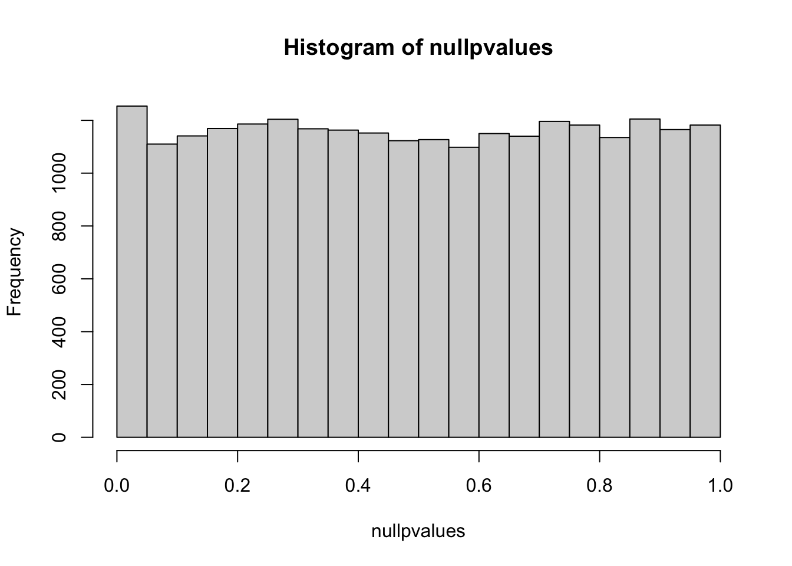
If you were to plot the histogram of these p-values, you might expect them to follow a uniform distribution (a flat line) under the null hypothesis (no differential expression). However, due to the nature of p-values as random variables, you will still observe some p-values below the commonly used significance level of 0.05, even when no genes are differentially expressed.
Compare this histogram with the histogram for the real data. what do you see? Even if we randomly generated the data, you still see some p values are smaller than 0.05!! We randomly generated data, there should be No genes that deferentially expressed. However, we see a flat line across different p values.
p values are random variables. Mathematically, one can demonstrate that under the null hypothesis (and some assumptions are met, in this case, the test statistic T follows standard normal distribution), p-values follow a uniform (0,1) distribution, which means that P(p < p1) = p1.
This means that the probability we see a p value smaller than p1 is equal to p1. That being said, with a 100 t-tests, under the null (no difference between control and treatment), we will see 1 test with a p value smaller than 0.01. And we will see 2 tests with a p value smaller than 0.02 etc.
We have 23250 genes in the matrix, and we did 23250 comparisons at one time. This explains why we see 23250 * 0.05 = 1162 p-values are smaller than 0.05 in our randomly generated numbers. That’s exactly what we see in the null distribution of the p-values.
In fact, checking the p-value distribution by histogram is a very important step during data analysis. You may want to read a blog post by David Robinson: How to interpret a p-value histogram.
12.8.3 Correcting for Multiple Comparisons: False Discovery Rate (FDR)
How do we control the false positives for multiple comparisons? One way is to use the Bonferroni correction to correct the familywise error rate (FWER): define a particular comparison as statistically significant only when the P value is less than alpha(often 0.05) divided by the number (m) of comparisons (p < alpha/m).
Say we computed 100 t-tests, and got 100 p values, we only consider the genes with a p value smaller than 0.05/100 as significant. This approach is very conservative and is used in Genome-wide association studies (GWAS). Since we often compare millions of genetic variations between (tens of thousands) cases and controls, this threshold will be very small!
Alternatively, we can use False Discovery Rate (FDR) to report the gene list. FDR = #false positives/# called significant. This approach does not use the term statistically significant but instead use the term discovery. Let’s control FDR for a gene list with FDR = 0.05. It means that of all the discoveries, 5% of them is expected to be false positives.
Benjamini & Hochberg (BH method) in 1995 proposed a way to control FDR: Let k be the largest i such that p(i) <= (i/m) * alpha, (m is the number of comparisons) then reject H(i) for i =1, 2, …k
This process controls the FDR at level alpha. The method sets a different threshold p value for each comparison. Say we computed 100 t-tests, and got 100 p values, and we want to control the FDR =0.05. We then rank the p values from small to big. if p(1) <= 1/100 * 0.05, we then reject null hypothesis and accept the alternative. if p(2) < = 2/100 * 0.05, we then reject the null and accept the alternative.
#remove the NAs
pvals<- pvals[!is.na(pvals)]
## order the pvals computed above and plot it.
alpha<- 0.05
#m is the number of comparisons
m<- length(pvals)
# let's arrange the p-value from small to big and get only the first 5000
top_5000_pvalue<- pval_df %>%
dplyr::arrange(pvalue) %>%
mutate(rank = row_number()) %>%
dplyr::slice(1:5000)
head(top_5000_pvalue) ## # A tibble: 6 × 3
## gene pvalue rank
## <chr> <dbl> <int>
## 1 PPFIA4 0.000000907 1
## 2 GINS2 0.00000173 2
## 3 ZFP36L2 0.00000197 3
## 4 ECHS1 0.00000297 4
## 5 MOB3A 0.00000392 5
## 6 FLYWCH2 0.00000661 6let’s plot
ggplot(top_5000_pvalue, aes(x= rank, y = pvalue))+
geom_point() +
geom_abline(slope = alpha/m, intercept = 0, color = "red", linetype = 2) p values that are below the red dotted line are controlled at FDR of 0.05.
We will use p.adjust function and the method “fdr†or “BH†to correct the p value, what the p.adjust function does is to recalculate the p-values.
With the FDR definition, p value is only significant if p(i)<= (i/m) * alpha We can rewrite it to p(i) * m/i <= alpha. The p.adjust function returns p(i) * m/i the adjusted p-value. We can then only accept the returned the p values if p.adjust(pvals) <= alpha.
## # A tibble: 6 × 4
## gene pvalue rank padj
## <chr> <dbl> <int> <dbl>
## 1 PPFIA4 0.000000907 1 0.0161
## 2 GINS2 0.00000173 2 0.0154
## 3 ZFP36L2 0.00000197 3 0.0116
## 4 ECHS1 0.00000297 4 0.0132
## 5 MOB3A 0.00000392 5 0.0139
## 6 FLYWCH2 0.00000661 6 0.0196How many of those p-values are below the dotted red line?
top_5000_pvalue %>%
mutate(padj = pvalue * m/rank) %>%
filter(padj <= alpha) %>%
filter(rank == which.max(rank))## # A tibble: 1 × 4
## gene pvalue rank padj
## <chr> <dbl> <int> <dbl>
## 1 RNASEH2A 0.00893 3173 0.0500There are total 3173 p-values that are significant after FDR correction.
We can verify it using the p.adjust function in R:
## [1] 3173This is the same as what we calculated manually!
We can plot a vertical line on the p-value ranking plot:
12.8.4 Conclusion
Correcting for multiple comparisons is essential when conducting statistical tests on a large number of hypotheses. The False Discovery Rate (FDR) correction, such as the Benjamini & Hochberg method, allows us to control the rate of false discoveries while identifying significant results. This approach is valuable in various scientific disciplines to ensure the reliability of statistical findings.
12.9 Analyzing Differential Gene Expression with DESeq2
In this step, we will explore the DESeq2 workflow, a widely used bioinformatics package in R for identifying differentially expressed genes (DEGs) from RNA sequencing (RNA-seq) data. DESeq2 allows us to compare gene expression levels between different conditions or treatments and find genes that are significantly upregulated or downregulated.
DESeq2is an R package within the Bioconductor project that performs differential expression analysis on RNA-seq data. It uses a negative binomial distribution to model read counts and estimates the variance-mean dependence in the data to identify DEGs accurately.DESeq2is particularly useful when dealing with count data from RNA-seq experiments. You can read docs here.
This Youtube video uses the same dataset and you may want to watch it if you prefer video.
12.9.1 Create a Sample Sheet
Before using DESeq2, it’s essential to prepare a sample sheet that describes the experimental conditions of your samples. The sample sheet associates each sample with its respective experimental condition or treatment. This step is crucial for DESeq2 to understand the experimental design, as it enables the comparison of gene expression between conditions.
In our project, we will use a sample sheet with two conditions: “normoxia†and “hypoxia.”
library(DESeq2)
coldata <- data.frame(condition = c("normoxia", "normoxia", "hypoxia", "hypoxia"))
rownames(coldata) <- colnames(raw_counts_mat)
coldata## condition
## 01_SW_sgCTRL_Norm normoxia
## 02_SW_sgCTRL_Norm normoxia
## 11_SW_sgCTRL_Hyp hypoxia
## 12_SW_sgCTRL_Hyp hypoxia12.9.2 Create a DESeq2 Object
Next, we create a DESeq2 object using the count data and the sample sheet. This object will store the count data and associated sample information and will be used for differential expression analysis by DESeq2.
The design formula specifies the experimental design, taking the condition as the main factor.
12.9.3 Get Differential Results
To identify differentially expressed genes, we extract results from the DESeq2 analysis, specifying the contrast between two conditions (e.g., “hypoxia†vs.“normoxia”).
## log2 fold change (MLE): condition hypoxia vs normoxia
## Wald test p-value: condition hypoxia vs normoxia
## DataFrame with 23250 rows and 6 columns
## baseMean log2FoldChange lfcSE stat pvalue padj
## <numeric> <numeric> <numeric> <numeric> <numeric> <numeric>
## DDX11L1 0.00000 NA NA NA NA NA
## WASH7P 23.25497 0.993523 0.588472 1.68831 0.0913516 0.1622577
## OR4F5 0.00000 NA NA NA NA NA
## LOC729737 8.93671 2.154987 0.975237 2.20970 0.0271257 0.0561441
## OR4F29 0.00000 NA NA NA NA NA
## ... ... ... ... ... ... ...
## APOBEC3A_B 0.000000 NA NA NA NA NA
## CCL3L1 0.228878 1.18653 4.99659 0.237469 0.812293 NA
## CCL4L1 0.000000 NA NA NA NA NA
## C4B_2 0.000000 NA NA NA NA NA
## HLA-DRB4 0.000000 NA NA NA NA NA12.9.4 Explore the DESeq2 results and create visualizations.
A volcano plot is a commonly used visualization in RNA-seq analysis. It helps identify genes that are both statistically significant and biologically relevant.
A volcano plot is a powerful visualization to simultaneously assess the significance and magnitude of gene expression changes. It helps identify genes that are both statistically significant and biologically relevant.
It’s a scatter plot with the log2 fold change on the x-axis and the negative logarithm (base 10) of the p-value on the y-axis.
library(ggplot2)
ggplot(data = as.data.frame(res)) +
geom_point(aes(x = log2FoldChange, y = -log10(pvalue))) +
theme_bw(base_size = 14)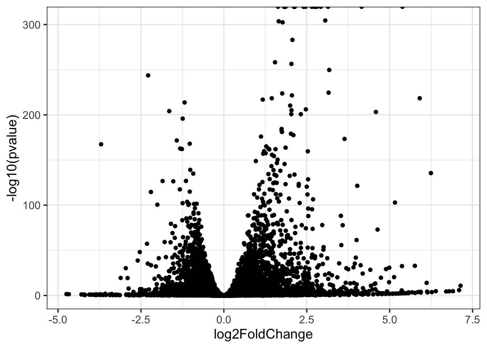
In this plot, each point represents a gene. The x-axis shows how much a gene’s expression changes (log2 fold change), while the y-axis indicates the significance of the change (-log10 p-value). Genes with a significant change will be far to the left or right on the plot, and those with very low p-values will be at the top.
12.9.5 Examining the Top Differentially Expressed Genes
Before creating visualizations, it’s essential to understand which genes are the most differentially expressed. Examining the top genes by significance and fold change can provide insights into the dataset’s characteristics.
top_differentially_expressed_genes <- res %>%
as.data.frame() %>%
arrange(padj, desc(log2FoldChange)) %>%
head(n = 30)
top_differentially_expressed_genes## baseMean log2FoldChange lfcSE stat pvalue
## IGFBP3 22694.513 5.384140 0.05254478 102.46766 0.000000e+00
## ARRDC3 2211.253 4.153253 0.09299795 44.65962 0.000000e+00
## DDIT4 2912.023 3.143397 0.07280767 43.17398 0.000000e+00
## GPRC5A 2443.496 2.921410 0.07586026 38.51041 0.000000e+00
## STC2 9772.604 2.803328 0.05319908 52.69504 0.000000e+00
## ERRFI1 4315.414 2.773205 0.06711717 41.31886 0.000000e+00
## BNIP3L 8437.252 2.722813 0.04976713 54.71107 0.000000e+00
## LAMB3 3161.408 2.650830 0.06558866 40.41597 0.000000e+00
## LOXL2 3325.460 2.462177 0.06261047 39.32532 0.000000e+00
## BHLHE40 6352.428 2.402080 0.05114599 46.96517 0.000000e+00
## LBH 5294.026 2.139980 0.05538427 38.63877 0.000000e+00
## SERPINE1 25413.676 2.138890 0.05195800 41.16576 0.000000e+00
## NDRG1 27629.756 2.111619 0.04201763 50.25554 0.000000e+00
## FOSL2 7700.341 1.862466 0.04843765 38.45080 0.000000e+00
## LPCAT2 8017.173 1.829938 0.04637707 39.45781 0.000000e+00
## SLC2A3 61623.341 1.812379 0.03588353 50.50726 0.000000e+00
## PGK1 27104.315 1.631855 0.03996567 40.83142 0.000000e+00
## ADM 1965.214 3.058278 0.08189923 37.34196 3.424156e-305
## ITGA3 11970.535 1.653973 0.04435752 37.28732 2.634577e-304
## MYOF 7676.155 1.771628 0.04760186 37.21762 3.540676e-303
## ITGA5 3934.470 2.067309 0.05743290 35.99520 9.945951e-284
## PPME1 8988.338 1.543067 0.04488883 34.37530 5.899480e-259
## CALCOCO1 3722.413 2.038787 0.05952092 34.25328 3.897346e-257
## EGLN3 1866.247 3.176719 0.09398826 33.79910 2.033171e-250
## CHI3L1 2520.051 -2.283507 0.06839506 -33.38702 2.115471e-244
## CAV1 1328.035 3.157403 0.09853096 32.04478 2.595697e-225
## PPL 5609.751 1.758699 0.05499130 31.98141 1.977676e-224
## TIMP3 3279.084 2.051831 0.06447047 31.82590 2.837566e-222
## SIGLEC6 1189.280 5.905399 0.18690484 31.59575 4.222688e-219
## ITGB4 9662.811 1.445206 0.04574502 31.59263 4.661613e-219
## padj
## IGFBP3 0.000000e+00
## ARRDC3 0.000000e+00
## DDIT4 0.000000e+00
## GPRC5A 0.000000e+00
## STC2 0.000000e+00
## ERRFI1 0.000000e+00
## BNIP3L 0.000000e+00
## LAMB3 0.000000e+00
## LOXL2 0.000000e+00
## BHLHE40 0.000000e+00
## LBH 0.000000e+00
## SERPINE1 0.000000e+00
## NDRG1 0.000000e+00
## FOSL2 0.000000e+00
## LPCAT2 0.000000e+00
## SLC2A3 0.000000e+00
## PGK1 0.000000e+00
## ADM 2.860883e-302
## ITGA3 2.085337e-301
## MYOF 2.662411e-300
## ITGA5 7.122722e-281
## PPME1 4.032831e-256
## CALCOCO1 2.548356e-254
## EGLN3 1.274036e-247
## CHI3L1 1.272583e-241
## CAV1 1.501411e-222
## PPL 1.101565e-221
## TIMP3 1.524077e-219
## SIGLEC6 2.189828e-216
## ITGB4 2.336867e-216The code above arranges genes in descending order of adjusted p-value (padj) and then by log2 fold change. It retrieves the top 30 genes with the most significant differences in expression between the conditions. You may also notice that the top several genes are with p-value of 0, that’s why you see the dots capped in the volcano plot.
You can use this list to focus further analysis or exploration on the genes with the most substantial changes.
12.9.6 Labeling Genes in the Volcano Plot
To identify and label genes of specific interest on the volcano plot, we filter genes based on criteria such as fold change and p-value.
To label genes of interest on the volcano plot, we first define criteria to identify them. In this example, we filter genes with an absolute log2 fold change greater than or equal to 2.5 and a p-value less than or equal to 0.001. We also exclude genes with names containing “LOC.”
genes_to_label <- res %>%
as.data.frame() %>%
tibble::rownames_to_column(var = "gene") %>%
filter(!stringr::str_detect(gene, "LOC"),
abs(log2FoldChange) >= 2.5,
padj <= 0.001)
head(genes_to_label)## gene baseMean log2FoldChange lfcSE stat pvalue
## 1 ERRFI1 4315.41443 2.773205 0.06711717 41.318865 0.000000e+00
## 2 NPPB 25.25513 4.474210 0.86388658 5.179164 2.228827e-07
## 3 CTRC 13.68629 4.629341 1.21487165 3.810560 1.386526e-04
## 4 PADI2 46.96747 2.852354 0.46635589 6.116260 9.579672e-10
## 5 GJB4 88.58994 2.797718 0.33766499 8.285485 1.176284e-16
## 6 EDN2 366.47734 3.583731 0.19100291 18.762705 1.524399e-78
## padj
## 1 0.000000e+00
## 2 1.066136e-06
## 3 4.506584e-04
## 4 5.721552e-09
## 5 1.227629e-15
## 6 1.302582e-76Now, we label these selected genes on the volcano plot using the ggrepel package to prevent label overlap.
library(ggrepel)
ggplot(data = as.data.frame(res), aes(x = log2FoldChange, y = -log10(pvalue))) +
geom_point() +
ggrepel::geom_label_repel(data = genes_to_label, aes(label = gene)) +
theme_bw(base_size = 14)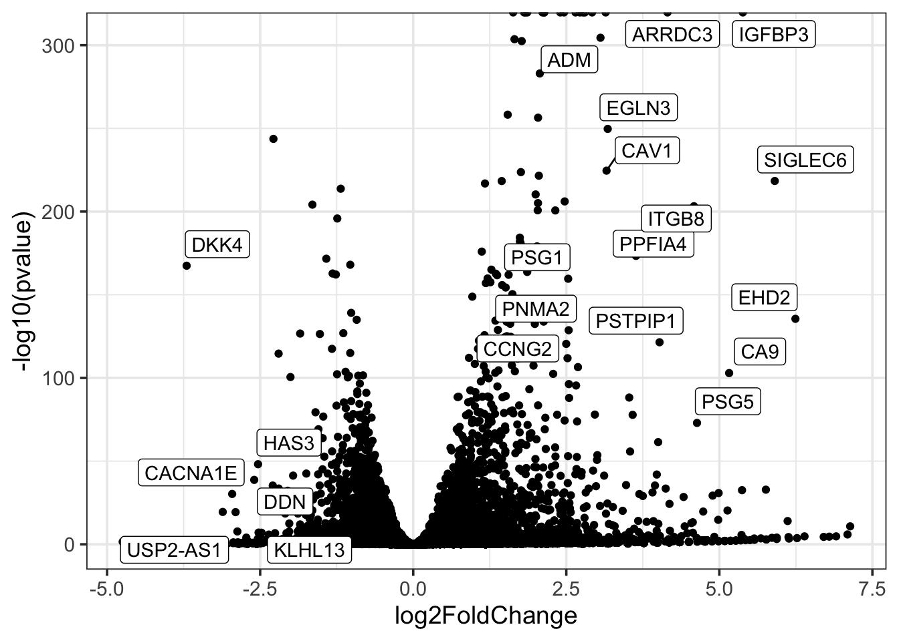
12.9.7 Coloring Points in the Volcano Plot
To further enhance the plot, we can color the points based on significance. Coloring points in the volcano plot based on significance provides additional information. It helps distinguish genes that are statistically significant from those that are not.
In this example, we color genes as “sig†(significant) or “not sig†(not significant) based on the criteria used for labeling.
res2 <- res %>%
as.data.frame() %>%
tibble::rownames_to_column(var = "gene") %>%
mutate(sig = case_when(
!stringr::str_detect(gene, "LOC") &
abs(log2FoldChange) >= 2.5 &
padj <= 0.001 ~ "sig",
TRUE ~ "not sig"
))
head(res2)## gene baseMean log2FoldChange lfcSE stat pvalue padj
## 1 DDX11L1 0.0000000 NA NA NA NA NA
## 2 WASH7P 23.2549734 0.9935235 0.5884719 1.6883109 0.09135156 0.16225771
## 3 OR4F5 0.0000000 NA NA NA NA NA
## 4 LOC729737 8.9367086 2.1549867 0.9752375 2.2097046 0.02712567 0.05614409
## 5 OR4F29 0.0000000 NA NA NA NA NA
## 6 OR4F16 0.9290025 1.3683069 2.9857917 0.4582727 0.64675651 NA
## sig
## 1 not sig
## 2 not sig
## 3 not sig
## 4 not sig
## 5 not sig
## 6 not sigNow, we update the volcano plot with colored points, horizontal and vertical lines, and labeled genes.
ggplot(res2, aes(x = log2FoldChange, y = -log10(pvalue))) +
geom_point(aes(color = sig)) +
ggrepel::geom_label_repel(data = genes_to_label, aes(label = gene))+
theme_bw(base_size = 14)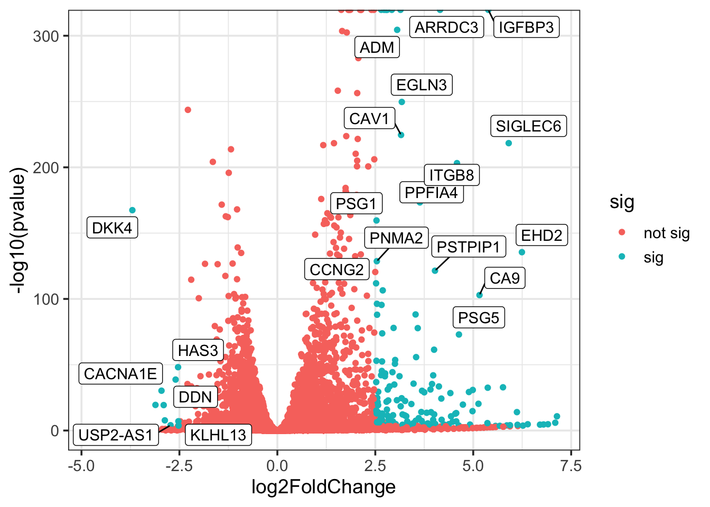
Now, let’s fix the color of the points and let’s use red for the significant ones
ggplot(res2, aes(x = log2FoldChange, y = -log10(pvalue))) +
geom_point(aes(color = sig)) +
scale_color_manual(values = c("blue", "red")) +
ggrepel::geom_label_repel(data = genes_to_label, aes(label = gene))+
theme_bw(base_size = 14)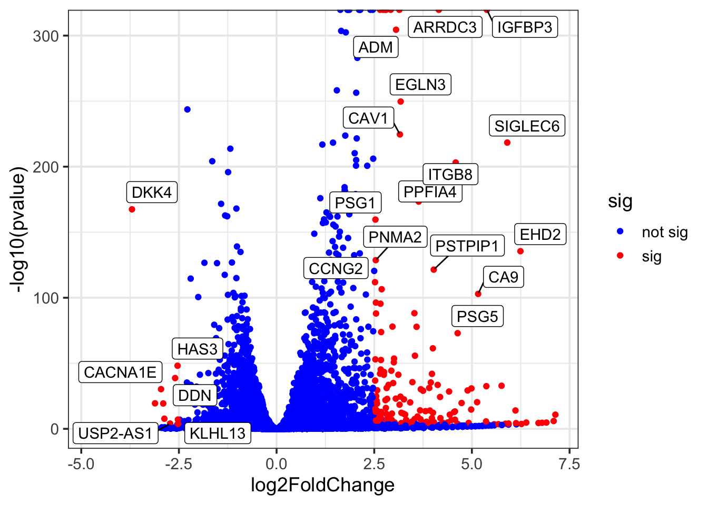
Finally, let’s add horizontal and vertical lines.
Vertical Lines: Vertical lines are often added at specific fold change values, such as -2.5 and 2.5 in the provided code. These lines represent the threshold for fold change, indicating the point beyond which genes are considered significantly upregulated (right of the rightmost line) or significantly downregulated (left of the leftmost line).
Horizontal Line: The horizontal line, we choose at -log10(pvalue) = 100 or another chosen significance level that fits your own data, emphasizing the threshold for statistical significance. Genes falling above this line are considered highly significant based on their p-values.
ggplot(res2, aes(x = log2FoldChange, y = -log10(pvalue))) +
geom_point(aes(color = sig)) +
scale_color_manual(values = c("blue", "red")) +
ggrepel::geom_label_repel(data = genes_to_label, aes(label = gene))+
geom_hline(yintercept = 100, linetype = 2, color = "red") +
geom_vline(xintercept = c(-2.5, 2.5), linetype = 2, color = "red")+
theme_bw(base_size = 14)This final plot provides a clear visualization of DEGs, with significant genes highlighted in red and labeled for easy identification.
12.9.8 Conclusion
In this lesson, we’ve explored the DESeq2 workflow for differential gene expression analysis in RNA-seq data. We’ve learned how to create a sample sheet, perform differential analysis, and visualize the results using volcano plots. Additionally, we’ve discussed criteria for labeling and coloring genes on the plot, making it a powerful tool for identifying biologically relevant DEGs in real-world datasets.
12.10 Principal Component Analysis (PCA) using DESeq2
In this lesson, we will explore Principal Component Analysis (PCA), a dimensionality reduction technique commonly used in genomics to analyze high-dimensional gene expression data. We will use R and the DESeq2 package to perform PCA analysis and understand the steps involved.
12.10.1 What is Principal Component Analysis (PCA)?
Principal Component Analysis, or PCA, is a mathematical technique used to reduce the dimensionality of high-dimensional data while retaining the most important information. In genomics, PCA is often used to visualize and explore variations in gene expression data across different samples or conditions.
12.10.2 Why use PCA?
Dimension Reduction: Genomic data often contain thousands of genes, making it challenging to visualize or analyze. PCA helps reduce this complexity by summarizing the data into a few principal components.
Visualization: PCA allows us to visualize the similarities and differences between samples or conditions in a lower-dimensional space, making it easier to detect patterns or clusters.
Identification of Outliers: PCA can help identify outlier samples that deviate significantly from the majority of samples. PCA usually is my first step in exploratory data analysis to spot the wiredness of the data.
12.10.3 Using DESeq2 for PCA Analysis
DESeq2 includes a function called plotPCA for performing PCA analysis. However, in some cases, you may want to perform PCA manually for more customization. Let’s walk through the steps.
DESeq2 has a plotPCA function to use:
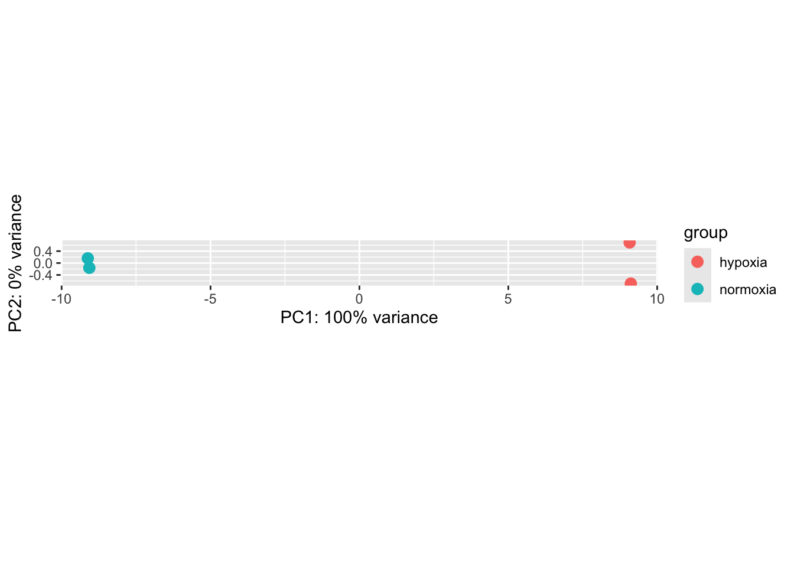
ddsis assumed to be a DESeqDataSet object containing raw gene expression data.vststands for Variance Stabilizing Transformation, which is used to normalize the gene expression data. This transformation stabilizes the variance across samples, making the data suitable for PCA analysis.The
blind=FALSEargument indicates that the design of the experiment is not blinded.Each point on the PCA plot represents a sample (e.g., a biological sample from an experiment).
The position of each point on the plot is determined by its scores along the principal components (PC1 and PC2).
The intgroup argument allows you to color the points based on a specific grouping variable (in this case, “condition”), which helps visualize how different conditions relate to each other in terms of gene expression patterns.
The resulting PCA plot provides insights into the underlying structure of the data. It clearly shows that the samples are separated in PC1 by the condition of hypoxia vs normoxia. PCA can be valuable for quality control, identifying experimental effects, or exploring the relationships between conditions in genomics research.
12.10.4 Plotting PCA by ourselves
Before performing Principal Component Analysis (PCA), it’s essential to prepare our gene expression data properly. In genomics, data often require normalization to account for variations introduced during the experimental process. We are using DESeq2’s Variance Stabilizing Transformation (VST) to normalize the data.
When conducting RNA-Seq experiments, variations can arise due to differences in sequencing depths, library sizes, and other technical factors. The VST helps to stabilize the variance across samples and makes the data more suitable for downstream analysis. By applying VST to our DESeqDataSet object named dds, you ensure that the data is in a suitable format for PCA, where the goal is to capture biological variations rather than technical noise.
12.10.4.1 Calculate Principal Components
Principal components are mathematical constructs that represent the major sources of variation in your data. Calculating principal components is a critical step in PCA.
In this step, we’ll use the prcomp function to compute the principal components from the normalized gene expression data. The function takes the transpose of the normalized counts as input because PCA is typically performed on columns (samples) rather than rows (genes).
By calculating these principal components, we are summarizing the data in a way that retains the most significant sources of variation across all genes and samples. This is essential because genes that vary together might provide insights into shared biological processes or conditions.
# Get the normalized counts
normalized_counts <- assay(vsd) %>% as.matrix()
# Calculate the principal components
pca_prcomp <- prcomp(t(normalized_counts), center = TRUE, scale. = FALSE)
names(pca_prcomp)## [1] "sdev" "rotation" "center" "scale" "x"In PCA, each principal component is a linear combination of the original variables (in this case, genes). The coefficients of this linear combination are called loadings. Loadings represent the contribution of each original variable (gene) to the principal component. Let’s retrieve them:
## PC1 PC2 PC3 PC4
## 01_SW_sgCTRL_Norm -13.25583 1.302834 -2.021424 7.071325e-14
## 02_SW_sgCTRL_Norm -13.20037 -1.312503 2.022705 7.433980e-14
## 11_SW_sgCTRL_Hyp 13.26493 -2.483543 -1.063259 7.233500e-14
## 12_SW_sgCTRL_Hyp 13.19128 2.493211 1.061978 7.091842e-1412.10.5 Create a DataFrame for Visualization
To visualize the results of PCA, we need to organize the principal component scores (PC1 and PC2) along with sample labels in a DataFrame.
This organization allows us to create a PCA plot where each point represents a sample, and we can color-code the points based on the sample labels. Also, this visualization helps us understand how samples relate to each other in a lower-dimensional space, where the primary sources of variation are captured by PC1 and PC2.
12.10.6 Plot the PCA
The final step is to create a PCA plot using the ggplot2 package. This plot visually represents the relationships between samples in a reduced-dimensional space.
Visualization is a crucial aspect of PCA. By plotting PC1 against PC2, we visualize how samples cluster or spread apart based on their gene expression profiles. The ggplot2 package provides a powerful and flexible way to create such plots. Each point in the plot corresponds to a sample, and the color of the points indicates the sample’s label or condition. This visual representation allows us to identify patterns, clusters, or outliers in our data, aiding in the interpretation of the biological significance of the variation observed.
# Load ggplot2 library
library(ggplot2)
# Create a PCA plot
ggplot(PC1_and_PC2, aes(x = PC1, y = PC2, col = type)) +
geom_point() +
geom_text(aes(label = type), hjust = 0, vjust = 0) +
coord_fixed()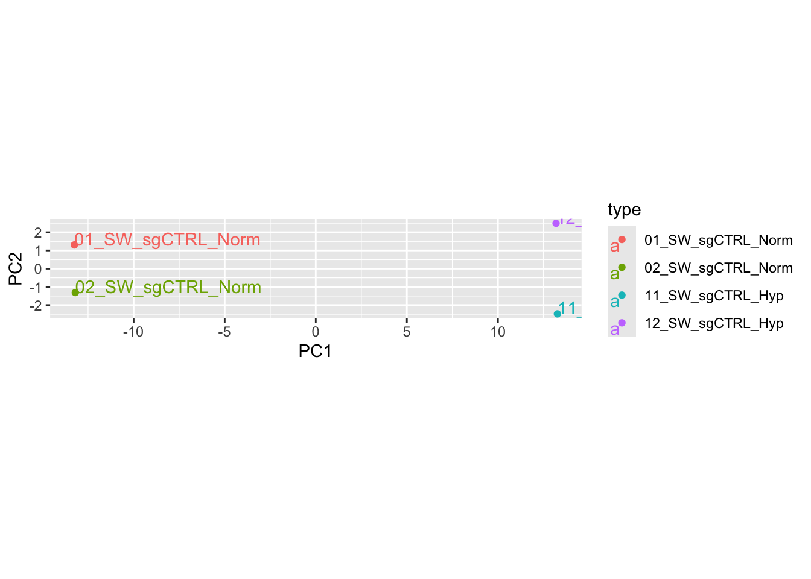
12.10.7 Comparison with DESeq2’s plotPCA
You may notice that the PCA plot we created manually is not identical to the one generated by DESeq2’s plotPCA function. This difference arises because DESeq2’s function uses a default set of genes (the top 500 most variable genes) for the analysis.
The choice of genes can significantly impact the results of PCA. DESeq2’s default behavior is to focus on the genes with the highest variation across samples, as these are often the most informative for distinguishing between conditions. However, in some cases, you may want to use all genes or a specific subset based on your research question. Customizing the gene selection can provide different perspectives on the data and help you address specific hypotheses or explore different aspects of gene expression variation.
12.10.8 Conclusion
In this lesson, we’ve delved into the steps of performing Principal Component Analysis (PCA) in genomics using the DESeq2 package. PCA is a valuable technique for exploring complex gene expression data and understanding each step in the process is essential for meaningful analysis and interpretation. By following these steps and considering the context and choices made during the analysis, you can gain deeper insights into your genomic data and draw biologically relevant conclusions.
12.11 Creating a Perfect Heatmap
Heatmaps are particularly useful in genomics and other scientific fields where large datasets need to be analyzed. We’ll cover the importance of selecting significant genes, scaling data, and annotating heatmaps to enhance their interpretability.
Watch this youtube video to better your understanding.
12.11.1 Selecting Significant Genes
Our journey begins by identifying the genes that exhibit significant changes in expression. We define significant genes as those with an adjusted p-value (padj) less than or equal to 0.01 and an absolute log2 fold change (log2FoldChange) greater than or equal to 2. These criteria help us focus on genes that are most likely to be biologically relevant.
library(ComplexHeatmap)
significant_genes <- res %>%
as.data.frame() %>%
filter(padj <= 0.01, abs(log2FoldChange) >= 2) %>%
rownames()
head(significant_genes, 10)## [1] "HES2" "ERRFI1" "NPPB" "CTRC" "ESPNP" "PADI2" "CDA" "CSMD2"
## [9] "GJB4" "COL8A2"The significant_genes variable now contains the names of genes meeting these criteria.
12.11.2 Creating the Heatmap
Next, we will create a heatmap using the selected significant genes. To ensure the heatmap is informative, we scale the data using the scale function. Scaling transforms the values so that they have a mean of 0 and a standard deviation of 1, making it easier to visualize relative differences.
significant_mat <- normalized_counts[significant_genes, ]
Heatmap(
t(scale(t(significant_mat))),
show_row_names = FALSE,
name = "scaled\nexpression"
)
By scaling the data, we obtain a heatmap with a legend ranging from -2 to 2, representing z-scores after scaling. This scaling helps us see the patterns in gene expression more clearly.
12.11.3 Why Scaling is Important?
Scaling is essential because it helps in comparing genes with different expression ranges. Without scaling, genes with larger absolute expression values may dominate the visualization, making it challenging to discern subtle patterns. Scaling levels the playing field, allowing us to focus on the relative changes in gene expression.
12.11.4 Adding Annotations
Annotations provide valuable context to our heatmap. In this example, we have annotations for different experimental conditions (e.g., “normoxia†and “hypoxia”). These annotations help us understand the conditions under which the gene expression data was collected.
## condition
## 01_SW_sgCTRL_Norm normoxia
## 02_SW_sgCTRL_Norm normoxia
## 11_SW_sgCTRL_Hyp hypoxia
## 12_SW_sgCTRL_Hyp hypoxiacol_anno <- HeatmapAnnotation(
df = coldata,
col = list(condition = c("hypoxia" = "red", "normoxia" = "blue"))
)
Heatmap(
t(scale(t(significant_mat))),
top_annotation = col_anno,
show_row_names = FALSE,
name = "scaled normalized\nexpression"
)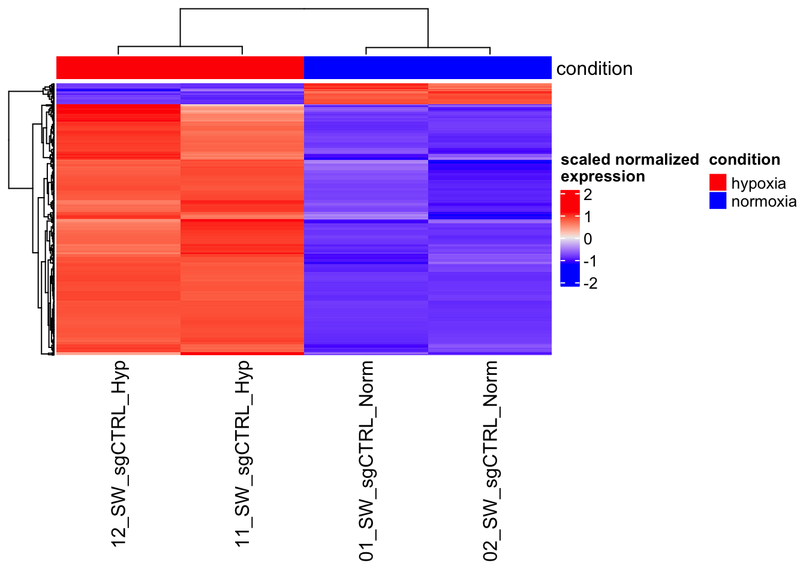
Now, our heatmap includes color annotations at the top, with “hypoxia†conditions shown in red and “normoxia†conditions in blue.
Note, we used a named vector to denote the color for each condition:
## hypoxia normoxia
## "red" "blue"12.11.5 The Impact of Scaling
To highlight the difference that scaling makes, we can compare our scaled heatmap with one that doesn’t use scaling. The legend of the unscaled heatmap displays the normalized expression values directly.
Heatmap(
significant_mat,
top_annotation = col_anno,
show_row_names = FALSE,
name = "normalized\nexpression"
)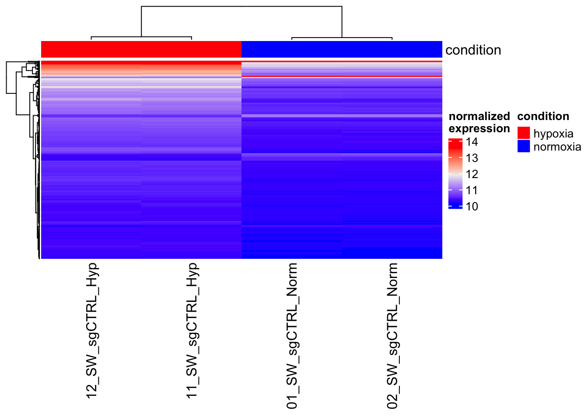
The key takeaway here is that without scaling, we may not be able to discern patterns as easily, especially when dealing with genes that have vastly different expression levels.
12.11.6 Conclusion
In this lesson, we’ve explored the process of creating a perfect heatmap by selecting significant genes, scaling the data, and adding annotations. It is “perfect†because we pre-selected those genes and we are expected to see the pattern shown in the heatmap.
Scaling is crucial for visualizing relative changes, and annotations provide context to help us interpret the heatmap effectively. Heatmaps are powerful tools for identifying trends and patterns within complex datasets, making them invaluable in fields like genomics and beyond. I highly recommend you to read the tutorial https://jokergoo.github.io/ComplexHeatmap-reference/book/. It is very comprehensive and we only covered a small number of features.
12.12 Pathway Analysis Using Over-Representation and Gene Set Enrichment Analysis
In this lesson, we will delve into pathway analysis, a crucial step in the field of bioinformatics. Pathway analysis helps us understand the biological functions and processes associated with a set of genes or proteins. We will explore two widely used methods: Over-Representation Analysis (ORA) and Gene Set Enrichment Analysis (GSEA).
Watch this YouTube video if you prefer:
12.12.1 Understanding Pathway Analysis
Pathway analysis is used to identify biological pathways or Gene Ontology (GO) terms that are significantly enriched in a set of genes. It helps us interpret the functional significance of a group of genes and can reveal insights into the underlying biology of a particular condition or experiment.
For further understanding go here: https://yulab-smu.top/biomedical-knowledge-mining-book/enrichment-overview.html
12.12.2 Over-Representation Analysis (ORA)
Over-Representation Analysis (ORA) is a method that compares the list of genes of interest (e.g., DEGs) to a background set (all genes in the experiment) to identify pathways that are over-represented among the genes of interest.
Let’s break down the steps for ORA:
Conversion of Gene Symbols: Genes are often represented by symbols. We convert these symbols to Entrez IDs, which are unique identifiers for genes, using the clusterProfiler package.
Selecting Background Genes: We filter out genes with zero expression (baseMean = 0) to create a list of background genes that were detected in the experiment.
Enrichment Analysis: Using the Gene Ontology (GO) database, we perform enrichment analysis for specific categories, such as Biological Processes (BP), Cellular Components (CC), or Molecular Functions (MF). For example, we focus on BP in this code.
Statistical Analysis: We apply statistical tests and corrections (e.g., Benjamini-Hochberg adjustment) to identify significantly enriched pathways.
Visualization: We visualize the results using bar plots and dot plots to highlight the most enriched pathways.
In many biological analyses, researchers work with gene symbols, which are human-readable names for genes. However, for more standardized and precise analysis, it is often necessary to convert these gene symbols to Entrez IDs. Entrez IDs are unique numeric identifiers assigned to genes in the National Center for Biotechnology Information (NCBI) Entrez database, providing a consistent way to refer to genes across various databases and tools.
library(clusterProfiler)
#convert gene symbol to Entrez ID
significant_genes_map<- clusterProfiler::bitr(geneID = significant_genes,
fromType="SYMBOL", toType="ENTREZID",
OrgDb="org.Hs.eg.db")
head(significant_genes_map)## SYMBOL ENTREZID
## 1 HES2 54626
## 2 ERRFI1 54206
## 3 NPPB 4879
## 4 CTRC 11330
## 5 ESPNP 284729
## 6 PADI2 11240In many RNA sequencing (RNA-seq) experiments, researchers aim to identify genes that are differentially expressed or have some other relevant feature compared to a control or reference group. However, it’s crucial to consider all the genes that were detected in the experiment, not just the differentially expressed ones. These detected genes are often referred to as “background genes.”
## background genes are genes that are detected in the RNAseq experiment
background_genes<- res %>%
as.data.frame() %>%
filter(baseMean != 0) %>%
tibble::rownames_to_column(var = "gene") %>%
pull(gene)
res_df<- res %>%
as.data.frame() %>%
filter(baseMean != 0) %>%
tibble::rownames_to_column(var = "gene")
background_genes_map<- bitr(geneID = background_genes,
fromType="SYMBOL",
toType="ENTREZID",
OrgDb="org.Hs.eg.db")
head(background_genes_map)## SYMBOL ENTREZID
## 1 WASH7P 653635
## 2 LOC729737 729737
## 3 OR4F16 81399
## 4 LOC100288069 100288069
## 5 LINC00115 79854
## 6 LINC01128 643837The resulting background_genes_map object contains a mapping between gene symbols and their corresponding Entrez IDs for the background genes. This mapping is essential for subsequent gene ontology enrichment analysis to ensure that the analysis considers standardized gene identifiers.
12.12.3 Some concepts to remember
Gene Ontology(GO) defines concepts/classes used to describe gene function and relationships between these concepts. It classifies functions along three aspects:
MF: Molecular Function molecular activities of gene products
CC: Cellular Component where gene products are active
BP: Biological Process pathways and larger processes made up of the activities of multiple gene products
GO terms are organized in a directed acyclic graph, where edges between terms represent parent-child relationship.
Now let’s perform a Gene Ontology (GO) enrichment analysis using the enrichGO function from the clusterProfiler package. GO enrichment analysis is a widely used technique in bioinformatics to determine whether a set of genes is overrepresented in specific functional categories, such as biological processes (BP), cellular components (CC), or molecular functions (MF).
ego <- enrichGO(gene = significant_genes_map$ENTREZID,
universe = background_genes_map$ENTREZID,
OrgDb = org.Hs.eg.db,
ont = "BP",
pAdjustMethod = "BH",
pvalueCutoff = 0.01,
qvalueCutoff = 0.05,
readable = TRUE)
head(ego)## ID Description GeneRatio
## GO:0001525 GO:0001525 angiogenesis 44/316
## GO:0045765 GO:0045765 regulation of angiogenesis 26/316
## GO:1901342 GO:1901342 regulation of vasculature development 26/316
## GO:0045766 GO:0045766 positive regulation of angiogenesis 19/316
## GO:1904018 GO:1904018 positive regulation of vasculature development 19/316
## GO:0070482 GO:0070482 response to oxygen levels 27/316
## BgRatio pvalue p.adjust qvalue
## GO:0001525 456/14508 6.573666e-17 2.350743e-13 1.907055e-13
## GO:0045765 243/14508 2.070707e-11 3.570942e-08 2.896950e-08
## GO:1901342 247/14508 2.995757e-11 3.570942e-08 2.896950e-08
## GO:0045766 141/14508 2.212513e-10 1.582389e-07 1.283723e-07
## GO:1904018 141/14508 2.212513e-10 1.582389e-07 1.283723e-07
## GO:0070482 296/14508 3.289495e-10 1.960539e-07 1.590500e-07
## geneID
## GO:0001525 NPPB/COL8A2/CCN1/F3/S1PR1/SEMA4A/SH2D2A/CHI3L1/CD34/TGFB2/COL4A3/ACKR3/CXCL8/EREG/NDNF/SEMA5A/FGF1/PDGFRB/EDN1/VEGFA/CCN2/TNFAIP3/SASH1/ITGB8/AQP1/SERPINE1/CAV1/LOXL2/ADGRB1/ANXA1/KLF4/ADAM12/ADM/ITGA5/MMP19/BTG1/NOX5/MMP2/PIK3R6/CCL2/C3/ANGPTL4/KLK3/APLN
## GO:0045765 NPPB/F3/SEMA4A/CHI3L1/CD34/TGFB2/COL4A3/CXCL8/SEMA5A/FGF1/VEGFA/TNFAIP3/SASH1/ITGB8/AQP1/SERPINE1/ADGRB1/KLF4/ADAM12/ADM/ITGA5/BTG1/PIK3R6/C3/ANGPTL4/KLK3
## GO:1901342 NPPB/F3/SEMA4A/CHI3L1/CD34/TGFB2/COL4A3/CXCL8/SEMA5A/FGF1/VEGFA/TNFAIP3/SASH1/ITGB8/AQP1/SERPINE1/ADGRB1/KLF4/ADAM12/ADM/ITGA5/BTG1/PIK3R6/C3/ANGPTL4/KLK3
## GO:0045766 F3/CHI3L1/CD34/CXCL8/SEMA5A/FGF1/VEGFA/SASH1/ITGB8/AQP1/SERPINE1/KLF4/ADAM12/ADM/ITGA5/BTG1/PIK3R6/C3/ANGPTL4
## GO:1904018 F3/CHI3L1/CD34/CXCL8/SEMA5A/FGF1/VEGFA/SASH1/ITGB8/AQP1/SERPINE1/KLF4/ADAM12/ADM/ITGA5/BTG1/PIK3R6/C3/ANGPTL4
## GO:0070482 CD34/TGFB2/KCNK3/NDNF/PDGFRB/STC2/EDN1/VEGFA/CD24/CCN2/AQP1/CAV1/LOXL2/STC1/BNIP3L/NDRG1/CA9/DDIT4/ADM/UCP3/CRYAB/DRD2/EGLN3/MMP2/NOS2/COL1A1/ANGPTL4
## Count
## GO:0001525 44
## GO:0045765 26
## GO:1901342 26
## GO:0045766 19
## GO:1904018 19
## GO:0070482 27The code you see is used to find significantly enriched biological processes (BP) among a list of significant genes (significant_genes_map$ENTREZID) compared to a background set of genes (background_genes_map$ENTREZID). Here’s what each parameter in the enrichGO function does:
gene: This is the list of significant genes that you want to analyze.
universe: The universe of genes against which you want to test for enrichment (in this case, the background genes).
OrgDb: Specifies the organism-specific gene annotation database (in this example, “org.Hs.eg.db†for Homo sapiens).
ont: Specifies the ontology to use (e.g., “BP†for Biological Process).
pAdjustMethod: The method used to adjust p-values for multiple testing (e.g., “BH†for Benjamini & Hochberg correction).
pvalueCutoff: The significance threshold for p-values.
qvalueCutoff: The significance threshold for q-values, which are adjusted p-values.
readable: A logical value indicating whether to include readable gene names.
Here, you can see the top enriched GO terms related to biological processes, along with their respective statistics.
It is reassuring you see angiogenesis (hypoxia induces angiogenesis) and response to oxygen levels are the top GO terms that are enriched.
This analysis helps researchers understand which biological processes are overrepresented in their list of significant genes, providing valuable insights into the underlying biology of the studied genes.
12.12.4 Visualizations
Now, let’s plot a barplot to visualize the enriched GO terms. The ego object contains the enrichment results generated previously. Each bar in the plot represents a GO term, and the height of the bar indicates the significance or enrichment level of that term. The showCategory parameter specifies how many top categories you want to display in the plot. In this case, we are displaying the top 20 enriched GO terms related to biological processes.
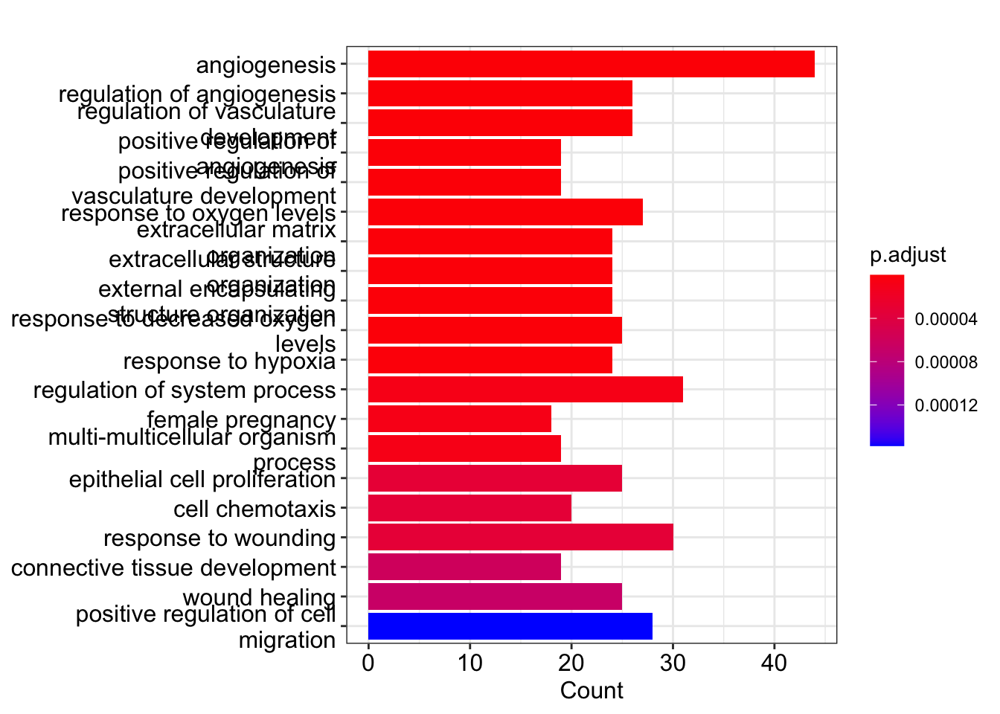
Now, let’s a dotplot where similar to the barplot, each dot in the plot represents a GO term. The size and color of the dots convey information about the significance and enrichment level of each term. Larger and more colorful dots represent more significant terms. The ego object is used to generate this plot as well.
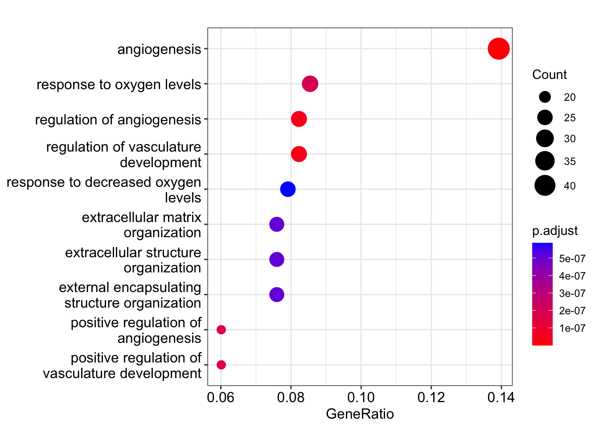
These visualizations are important because they provide a quick and intuitive way to understand which biological processes are most relevant or significantly enriched in your dataset. Researchers can use these plots to identify key pathways or functions associated with their genes of interest.
For example, in a genomics study, these plots could help identify the biological processes that are most affected by differentially expressed genes, shedding light on the underlying molecular mechanisms of a particular condition or disease.
12.12.5 Introduction to MSigDB
You can check the docs here.
MSigDB (Molecular Signatures Database) is a widely used resource for gene set enrichment analysis. It provides curated collections of gene sets representing various biological processes, pathways, and functional categories. These gene sets are organized into different categories, making it easier to explore and analyze.
The following are some of the key categories in MSigDB:
H (Hallmark gene sets): These are a set of 50 gene sets representing well-defined biological states or processes.
C1 (Positional gene sets): Gene sets based on chromosomal location.
C2 (Curated gene sets): Manually curated gene sets from various sources, including pathway databases.
C3 (Motif gene sets): Gene sets related to transcription factor binding motifs.
C4 (Computational gene sets): Gene sets generated through computational methods.
C5 (GO gene sets): Gene sets based on Gene Ontology terms.
C6 (Oncogenic signatures): Gene sets associated with cancer-related processes.
C7 (Immunologic signatures): Gene sets related to immune system processes.
Let’s start by loading the msigdbr package and accessing the MSigDB database. We’ll specifically focus on the “Hallmark gene sets†(category H) for Homo sapiens (human).
# Load the msigdbr package
library(msigdbr)
# Retrieve Hallmark gene sets for Homo sapiens
m_df <- msigdbr(species = "Homo sapiens")
head(m_df)## # A tibble: 6 × 15
## gs_cat gs_subcat gs_name gene_symbol entrez_gene ensembl_gene
## <chr> <chr> <chr> <chr> <int> <chr>
## 1 C3 MIR:MIR_Legacy AAACCAC_MIR140 ABCC4 10257 ENSG00000125257
## 2 C3 MIR:MIR_Legacy AAACCAC_MIR140 ABRAXAS2 23172 ENSG00000165660
## 3 C3 MIR:MIR_Legacy AAACCAC_MIR140 ACTN4 81 ENSG00000130402
## 4 C3 MIR:MIR_Legacy AAACCAC_MIR140 ACTN4 81 ENSG00000282844
## 5 C3 MIR:MIR_Legacy AAACCAC_MIR140 ACVR1 90 ENSG00000115170
## 6 C3 MIR:MIR_Legacy AAACCAC_MIR140 ADAM9 8754 ENSG00000168615
## # ℹ 9 more variables: human_gene_symbol <chr>, human_entrez_gene <int>,
## # human_ensembl_gene <chr>, gs_id <chr>, gs_pmid <chr>, gs_geoid <chr>,
## # gs_exact_source <chr>, gs_url <chr>, gs_description <chr>Them_df object now contains information about the Hallmark gene sets.
Let’s use the msigdbr function with the species parameter set to “Homo sapiens†and the category parameter set to “H†to retrieve Hallmark gene sets. We then use the dplyr::select function to extract only the columns containing the gene set names (gs_name) and associated entrez gene IDs (entrez_gene).
To get an overview of the number of genes in each gene set, we can create a table:
##
## HALLMARK_ADIPOGENESIS
## 210
## HALLMARK_ALLOGRAFT_REJECTION
## 335
## HALLMARK_ANDROGEN_RESPONSE
## 102
## HALLMARK_ANGIOGENESIS
## 36
## HALLMARK_APICAL_JUNCTION
## 231
## HALLMARK_APICAL_SURFACE
## 46
## HALLMARK_APOPTOSIS
## 183
## HALLMARK_BILE_ACID_METABOLISM
## 114
## HALLMARK_CHOLESTEROL_HOMEOSTASIS
## 77
## HALLMARK_COAGULATION
## 162
## HALLMARK_COMPLEMENT
## 237
## HALLMARK_DNA_REPAIR
## 170
## HALLMARK_E2F_TARGETS
## 218
## HALLMARK_EPITHELIAL_MESENCHYMAL_TRANSITION
## 204
## HALLMARK_ESTROGEN_RESPONSE_EARLY
## 216
## HALLMARK_ESTROGEN_RESPONSE_LATE
## 218
## HALLMARK_FATTY_ACID_METABOLISM
## 165
## HALLMARK_G2M_CHECKPOINT
## 204
## HALLMARK_GLYCOLYSIS
## 215
## HALLMARK_HEDGEHOG_SIGNALING
## 36
## HALLMARK_HEME_METABOLISM
## 214
## HALLMARK_HYPOXIA
## 215
## HALLMARK_IL2_STAT5_SIGNALING
## 216
## HALLMARK_IL6_JAK_STAT3_SIGNALING
## 103
## HALLMARK_INFLAMMATORY_RESPONSE
## 222
## HALLMARK_INTERFERON_ALPHA_RESPONSE
## 140
## HALLMARK_INTERFERON_GAMMA_RESPONSE
## 286
## HALLMARK_KRAS_SIGNALING_DN
## 220
## HALLMARK_KRAS_SIGNALING_UP
## 220
## HALLMARK_MITOTIC_SPINDLE
## 215
## HALLMARK_MTORC1_SIGNALING
## 211
## HALLMARK_MYC_TARGETS_V1
## 236
## HALLMARK_MYC_TARGETS_V2
## 60
## HALLMARK_MYOGENESIS
## 212
## HALLMARK_NOTCH_SIGNALING
## 34
## HALLMARK_OXIDATIVE_PHOSPHORYLATION
## 220
## HALLMARK_P53_PATHWAY
## 215
## HALLMARK_PANCREAS_BETA_CELLS
## 44
## HALLMARK_PEROXISOME
## 110
## HALLMARK_PI3K_AKT_MTOR_SIGNALING
## 118
## HALLMARK_PROTEIN_SECRETION
## 98
## HALLMARK_REACTIVE_OXYGEN_SPECIES_PATHWAY
## 58
## HALLMARK_SPERMATOGENESIS
## 144
## HALLMARK_TGF_BETA_SIGNALING
## 59
## HALLMARK_TNFA_SIGNALING_VIA_NFKB
## 228
## HALLMARK_UNFOLDED_PROTEIN_RESPONSE
## 115
## HALLMARK_UV_RESPONSE_DN
## 152
## HALLMARK_UV_RESPONSE_UP
## 191
## HALLMARK_WNT_BETA_CATENIN_SIGNALING
## 50
## HALLMARK_XENOBIOTIC_METABOLISM
## 224## # A tibble: 6 × 2
## gs_name entrez_gene
## <chr> <int>
## 1 HALLMARK_ADIPOGENESIS 19
## 2 HALLMARK_ADIPOGENESIS 11194
## 3 HALLMARK_ADIPOGENESIS 10449
## 4 HALLMARK_ADIPOGENESIS 33
## 5 HALLMARK_ADIPOGENESIS 34
## 6 HALLMARK_ADIPOGENESIS 35Now that we have retrieved the Hallmark gene sets, let’s perform gene set enrichment analysis using these sets.
We’ll use a set of significant genes from our analysis (represented by significant_genes_map$ENTREZID) and the Hallmark gene sets (represented by m_t2g). This analysis will help us identify which Hallmark gene sets are enriched in our significant genes.
em <- enricher(significant_genes_map$ENTREZID, TERM2GENE = m_t2g,
universe = background_genes_map$ENTREZID)Here, we are using the enricher function from the msigdbr package to perform the enrichment analysis. It takes as input the list of significant genes, the mapping between gene sets and genes (TERM2GENE), and the background gene set (typically all detected genes in the dataset).
Now, let’s examine the results of the enrichment analysis:
## ID
## HALLMARK_HYPOXIA HALLMARK_HYPOXIA
## HALLMARK_EPITHELIAL_MESENCHYMAL_TRANSITION HALLMARK_EPITHELIAL_MESENCHYMAL_TRANSITION
## HALLMARK_TNFA_SIGNALING_VIA_NFKB HALLMARK_TNFA_SIGNALING_VIA_NFKB
## HALLMARK_KRAS_SIGNALING_UP HALLMARK_KRAS_SIGNALING_UP
## HALLMARK_KRAS_SIGNALING_DN HALLMARK_KRAS_SIGNALING_DN
## HALLMARK_INFLAMMATORY_RESPONSE HALLMARK_INFLAMMATORY_RESPONSE
## Description
## HALLMARK_HYPOXIA HALLMARK_HYPOXIA
## HALLMARK_EPITHELIAL_MESENCHYMAL_TRANSITION HALLMARK_EPITHELIAL_MESENCHYMAL_TRANSITION
## HALLMARK_TNFA_SIGNALING_VIA_NFKB HALLMARK_TNFA_SIGNALING_VIA_NFKB
## HALLMARK_KRAS_SIGNALING_UP HALLMARK_KRAS_SIGNALING_UP
## HALLMARK_KRAS_SIGNALING_DN HALLMARK_KRAS_SIGNALING_DN
## HALLMARK_INFLAMMATORY_RESPONSE HALLMARK_INFLAMMATORY_RESPONSE
## GeneRatio BgRatio pvalue
## HALLMARK_HYPOXIA 29/133 191/3984 1.519657e-12
## HALLMARK_EPITHELIAL_MESENCHYMAL_TRANSITION 24/133 177/3984 1.897877e-09
## HALLMARK_TNFA_SIGNALING_VIA_NFKB 19/133 188/3984 1.083454e-05
## HALLMARK_KRAS_SIGNALING_UP 18/133 176/3984 1.605325e-05
## HALLMARK_KRAS_SIGNALING_DN 14/133 149/3984 3.709578e-04
## HALLMARK_INFLAMMATORY_RESPONSE 15/133 174/3984 5.793946e-04
## p.adjust qvalue
## HALLMARK_HYPOXIA 6.534527e-11 4.958882e-11
## HALLMARK_EPITHELIAL_MESENCHYMAL_TRANSITION 4.080436e-08 3.096536e-08
## HALLMARK_TNFA_SIGNALING_VIA_NFKB 1.552951e-04 1.178494e-04
## HALLMARK_KRAS_SIGNALING_UP 1.725724e-04 1.309607e-04
## HALLMARK_KRAS_SIGNALING_DN 3.190237e-03 2.420988e-03
## HALLMARK_INFLAMMATORY_RESPONSE 4.152328e-03 3.151093e-03
## geneID
## HALLMARK_HYPOXIA 54206/1907/3491/2152/8497/3623/57007/8553/55076/901/4015/8614/7422/1490/7128/3484/3486/5054/857/6781/665/10397/1289/5209/54541/133/694/3669/51129
## HALLMARK_EPITHELIAL_MESENCHYMAL_TRANSITION 1296/3491/4148/3576/4015/5159/7422/1490/7128/3624/3486/5054/4017/6591/1289/8038/6876/50863/3678/4313/1009/1277/50509/7078
## HALLMARK_TNFA_SIGNALING_VIA_NFKB 3491/2152/3914/57007/8553/604/1437/1906/7422/6446/7128/3624/5054/19/9314/5209/330/694/6347
## HALLMARK_KRAS_SIGNALING_UP 7139/28951/2069/1437/2162/639/7128/3624/3486/5243/9314/80201/330/3587/5175/51129/3689/3561
## HALLMARK_KRAS_SIGNALING_DN 1907/7042/80303/7068/3699/1906/6446/56154/3851/3860/3866/3780/7032/778
## HALLMARK_INFLAMMATORY_RESPONSE 2152/3576/2069/1906/3696/3624/5054/19/1902/133/3587/3678/23533/6347/10148
## Count
## HALLMARK_HYPOXIA 29
## HALLMARK_EPITHELIAL_MESENCHYMAL_TRANSITION 24
## HALLMARK_TNFA_SIGNALING_VIA_NFKB 19
## HALLMARK_KRAS_SIGNALING_UP 18
## HALLMARK_KRAS_SIGNALING_DN 14
## HALLMARK_INFLAMMATORY_RESPONSE 15The em object contains information about the enriched gene sets, including their names, descriptions, p-values, and adjusted p-values (q-values). The q-value represents the corrected p-value and is often used to control for false discoveries in enrichment analysis.
To visualize the enrichment results, we can create a dotplot that shows the enriched gene sets and their significance.
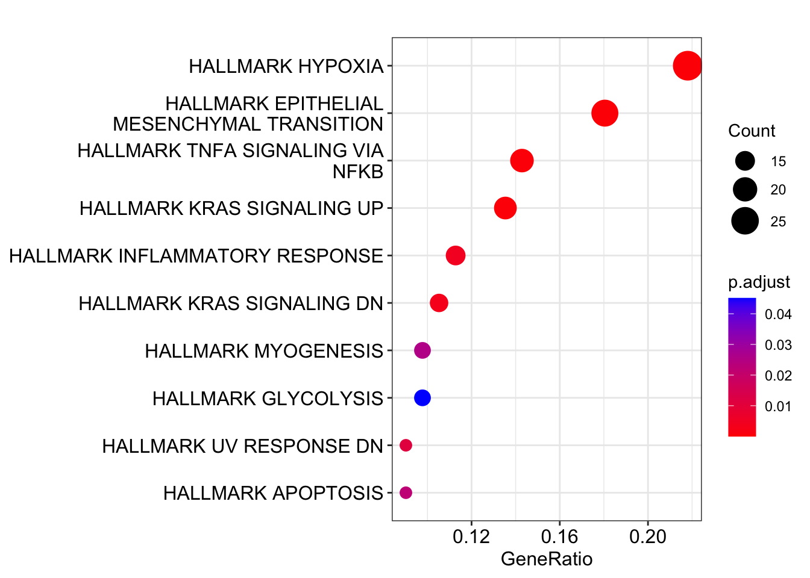
The dotplot will display the enriched gene sets as dots, with the size and color of the dots representing the significance of enrichment. This visualization helps identify the most significantly enriched gene sets.
Take a look, among the predefined gene sets, “HALLMARK HYPOXIA†is the pathway most strongly associated with the genes we are studying which makes perfect sense!
12.12.6 Gene Set Enrichment Analysis (GSEA)
Gene Set Enrichment Analysis (GSEA) is an alternative approach that considers the entire list of genes ranked by their association with a phenotype or condition. Instead of just looking for over-represented pathways, GSEA assesses whether a predefined gene set (e.g., a pathway) shows a significant association with the phenotype across the entire ranked gene list.
Let’s break down the steps for GSEA:
Accessing Gene Sets: We use the
msigdbrpackage to access gene sets from resources likeMSigDB. These gene sets represent predefined pathways or functional categories.Conversion of Gene Symbols: Similar to ORA, we convert gene symbols to Entrez IDs for consistency.
Enrichment Analysis: We perform gene set enrichment analysis using the ranked gene list and predefined gene sets.
Statistical Analysis: Statistical tests determine whether specific gene sets are enriched at the top or bottom of the ranked list.
Visualization: We visualize the results using dot plots, which highlight gene sets enriched at the top or bottom of the ranked list.
12.12.7 GSEA in action
Before we dive into GSEA, we need to prepare our gene expression data. We have a dataset represented as res_df, which contains information about genes, including their fold change and p-values. GSEA requires the data to be pre-ranked based on a metric that combines fold change and significance, such as signed fold change multiplied by the negative logarithm of the p-value.
res_df <- res_df %>%
mutate(signed_rank_stats = sign(log2FoldChange) * -log10(pvalue)) %>%
left_join(background_genes_map, by = c("gene" = "SYMBOL")) %>%
arrange(desc(signed_rank_stats))One issue that may arise is the presence of infinite values in the data, which can cause errors during GSEA. To address this, we replace infinite values with large numbers so they will be ranked high:
res_df <- res_df %>%
mutate(negative_log10pvalue = -log10(pvalue)) %>%
mutate(negative_log10pvalue = ifelse(is.infinite(negative_log10pvalue), 1000, negative_log10pvalue)) %>%
mutate(signed_rank_stats = sign(log2FoldChange) * negative_log10pvalue)GSEA helps us determine whether a predefined set of genes, representing a biological pathway or function, is significantly enriched in our dataset. This analysis identifies whether genes within a specific set tend to be ranked higher or lower based on their association with a biological condition.
In the code below, we perform GSEA using our pre-ranked gene list and a reference gene set, represented by m_t2g:
gene_list <- res_df$signed_rank_stats
names(gene_list) <- res_df$ENTREZID
em2 <- GSEA(gene_list, TERM2GENE = m_t2g)
head(em2)## ID
## HALLMARK_E2F_TARGETS HALLMARK_E2F_TARGETS
## HALLMARK_G2M_CHECKPOINT HALLMARK_G2M_CHECKPOINT
## HALLMARK_HYPOXIA HALLMARK_HYPOXIA
## HALLMARK_OXIDATIVE_PHOSPHORYLATION HALLMARK_OXIDATIVE_PHOSPHORYLATION
## HALLMARK_TNFA_SIGNALING_VIA_NFKB HALLMARK_TNFA_SIGNALING_VIA_NFKB
## HALLMARK_MYC_TARGETS_V1 HALLMARK_MYC_TARGETS_V1
## Description setSize
## HALLMARK_E2F_TARGETS HALLMARK_E2F_TARGETS 197
## HALLMARK_G2M_CHECKPOINT HALLMARK_G2M_CHECKPOINT 199
## HALLMARK_HYPOXIA HALLMARK_HYPOXIA 191
## HALLMARK_OXIDATIVE_PHOSPHORYLATION HALLMARK_OXIDATIVE_PHOSPHORYLATION 195
## HALLMARK_TNFA_SIGNALING_VIA_NFKB HALLMARK_TNFA_SIGNALING_VIA_NFKB 188
## HALLMARK_MYC_TARGETS_V1 HALLMARK_MYC_TARGETS_V1 194
## enrichmentScore NES pvalue
## HALLMARK_E2F_TARGETS -0.8226116 -2.049228 1.000000e-10
## HALLMARK_G2M_CHECKPOINT -0.8006879 -1.997252 1.000000e-10
## HALLMARK_HYPOXIA 0.9471260 1.949123 1.000000e-10
## HALLMARK_OXIDATIVE_PHOSPHORYLATION -0.7802383 -1.944699 1.558377e-10
## HALLMARK_TNFA_SIGNALING_VIA_NFKB 0.8959159 1.840660 2.233017e-07
## HALLMARK_MYC_TARGETS_V1 -0.7234918 -1.804750 2.784633e-07
## p.adjust qvalues rank
## HALLMARK_E2F_TARGETS 1.666667e-09 8.771930e-10 1736
## HALLMARK_G2M_CHECKPOINT 1.666667e-09 8.771930e-10 2206
## HALLMARK_HYPOXIA 1.666667e-09 8.771930e-10 639
## HALLMARK_OXIDATIVE_PHOSPHORYLATION 1.947971e-09 1.025248e-09 2634
## HALLMARK_TNFA_SIGNALING_VIA_NFKB 2.233017e-06 1.175272e-06 1067
## HALLMARK_MYC_TARGETS_V1 2.320528e-06 1.221330e-06 1203
## leading_edge
## HALLMARK_E2F_TARGETS tags=60%, list=10%, signal=55%
## HALLMARK_G2M_CHECKPOINT tags=60%, list=12%, signal=53%
## HALLMARK_HYPOXIA tags=44%, list=4%, signal=43%
## HALLMARK_OXIDATIVE_PHOSPHORYLATION tags=61%, list=15%, signal=53%
## HALLMARK_TNFA_SIGNALING_VIA_NFKB tags=36%, list=6%, signal=34%
## HALLMARK_MYC_TARGETS_V1 tags=75%, list=7%, signal=70%
## core_enrichment
## HALLMARK_E2F_TARGETS 27338/3978/9972/10635/7398/55635/25842/79019/6241/1633/10549/10248/4605/9133/6839/3148/9125/10535/9833/10733/253714/5558/10714/51155/3184/10212/3930/10615/29089/2146/23594/84844/9319/8726/5982/4999/24137/3161/4288/84296/672/9787/3015/5889/10797/23649/9126/3835/983/57122/1965/7514/29028/3838/11340/9212/9700/8914/5424/4085/701/3609/204/4830/4001/55646/7153/6790/5631/3070/7112/4678/9918/1111/6628/29127/1854/332/6427/10051/79075/5591/54962/11051/8243/2547/5983/4436/991/23165/1503/4171/993/5347/7374/10492/9238/6749/10527/1019/1164/4174/5902/79077/3159/1786/6426/5111/4175/4172/10528/4176/5901/4173/5425/1434/5036/9221
## HALLMARK_G2M_CHECKPOINT 5885/1033/6118/10460/1062/2130/5976/4957/11004/3226/1841/1163/10721/6434/9055/4751/3014/27338/51203/5887/3980/4605/10403/9133/6839/8899/10733/10592/1810/5558/6713/3832/1874/51155/3184/10212/3930/3619/1869/8438/8454/2146/23594/22809/24137/3161/4288/5933/6599/9585/3015/7027/3151/890/23649/10036/3835/983/699/262/5001/55872/7290/22974/7514/990/3838/7150/10926/9212/9700/10419/8318/51776/9184/4085/3609/4001/7153/10432/6790/7112/7272/4678/1111/29127/332/6427/7371/10051/9156/10146/4953/8243/7090/6421/3837/991/51659/3192/4171/993/5347/10772/10492/1019/1164/6632/4174/3159/6426/8140/4175/4172/3312/85236/1736/4691/9221
## HALLMARK_HYPOXIA 54206/2355/8553/8614/3486/5054/665/10397/54541/6515/5230/133/857/6513/3491/5209/7045/8497/7052/6385/8974/4627/1316/205/3725/7422/55818/3099/694/7167/901/5155/5163/2026/2632/302/2113/55076/1907/1490/5033/10370/55139/23645/6095/284119/8660/1649/2023/3098/2152/10957/5214/5211/23764/4783/3309/30001/5236/7852/2597/1026/4601/26118/112464/5329/6533/467/51129/26136/5066/3669/54800/23327/4015/7128/2131/7436/2997/6781/26355/23036/3516/3623
## HALLMARK_OXIDATIVE_PHOSPHORYLATION 8050/4967/10449/64963/1337/1632/27089/26521/36/23479/22/26520/10651/3030/6391/4713/4709/1350/9868/521/10632/4701/26519/4728/522/4726/6389/10975/4702/4720/4717/4694/7384/4835/1743/23530/6832/291/509/9551/65003/10939/1340/4729/4723/513/4552/374291/1351/4712/5018/2746/3420/50/7417/2108/7386/10440/1355/8604/9927/1374/5250/64981/3032/34/29796/4706/3028/56993/8802/10989/1892/10884/5447/29088/7388/51318/26517/4697/9377/2395/92609/4704/1738/64960/1349/533/1737/3313/54704/6390/23203/5435/517/515/4191/2271/3419/6392/518/56945/7416/9131/516/38/3417/54205/10935/11331/498/1537/10128/1431/5160/2806/506/292/3945
## HALLMARK_TNFA_SIGNALING_VIA_NFKB 3914/2355/8553/5054/6515/3491/5209/6385/1316/3725/7422/694/10318/9314/22822/4616/23645/8660/2152/10769/56937/4082/10957/1827/6446/23764/4783/3383/7050/329/10725/23135/9120/19/1026/2114/5329/467/960/330/8744/8061/4084/7128/604/2354/4791/10938/7538/6303/25976/1847/3976/23258/4088/3572/5606/1906/3280/4792/9516/3624/1437/687/4973/1839/1846/3371
## HALLMARK_MYC_TARGETS_V1 10399/6432/5687/5683/5682/6188/10549/11335/3251/5688/6141/23016/8894/11260/7411/3184/6240/7332/8454/220988/6637/4999/6175/65005/6599/10921/5250/8664/3015/3066/7027/8662/3608/890/4706/6193/55651/3178/7298/6128/2058/2739/5093/1965/7514/5984/3838/9045/328/8886/9377/8318/9184/4085/10054/7965/1478/6633/51690/1964/4830/1982/6428/9136/26354/6627/5478/23435/1854/9188/6427/3376/10856/6634/6194/10146/2079/51491/4953/10971/56910/7416/2547/10291/1207/3837/8669/6732/5496/23196/991/3192/1665/1503/4171/23450/10492/10728/10155/3336/6187/1019/3615/6632/10935/11331/8761/1537/3181/3735/2107/4686/4174/7555/6418/5902/6059/26156/6426/7284/6723/3183/5111/4175/790/10576/6741/10528/4176/2806/5901/4173/10574/708/6950/5425/26135/7203/10575/3326/22948/5036/4869/9221/3329This output includes several columns, such as the gene set ID, description, size, enrichment score, normalized enrichment score (NES), p-value, and more. Let’s briefly explain some of these terms:
Enrichment Score (ES): Measures the degree to which a gene set is overrepresented at the top or bottom of the ranked list of genes.
Normalized Enrichment Score (NES): The ES adjusted for the size of the gene set and dataset.
P-value: Indicates the statistical significance of the enrichment.
FDR-adjusted p-value (q-value): Corrected p-value to account for multiple comparisons.
If you want to visualize it in a table format, you can run:
Once you run it, a table or data frame containing the results of the GSEA analysis will be displayed, allowing you to examine the details of the enriched gene sets, their enrichment scores, p-values, and other relevant information.
12.12.8 Visualizing GSEA Results
After performing GSEA and obtaining results, it’s crucial to visualize these results effectively to gain insights and communicate findings. We’ll use the gseaplot function to create visual representations of enriched gene sets.
# save visualization in p1
p1<- gseaplot(em2, geneSetID = "HALLMARK_G2M_CHECKPOINT",
by = "runningScore", title = "HALLMARK_G2M_CHECKPOINT")
p1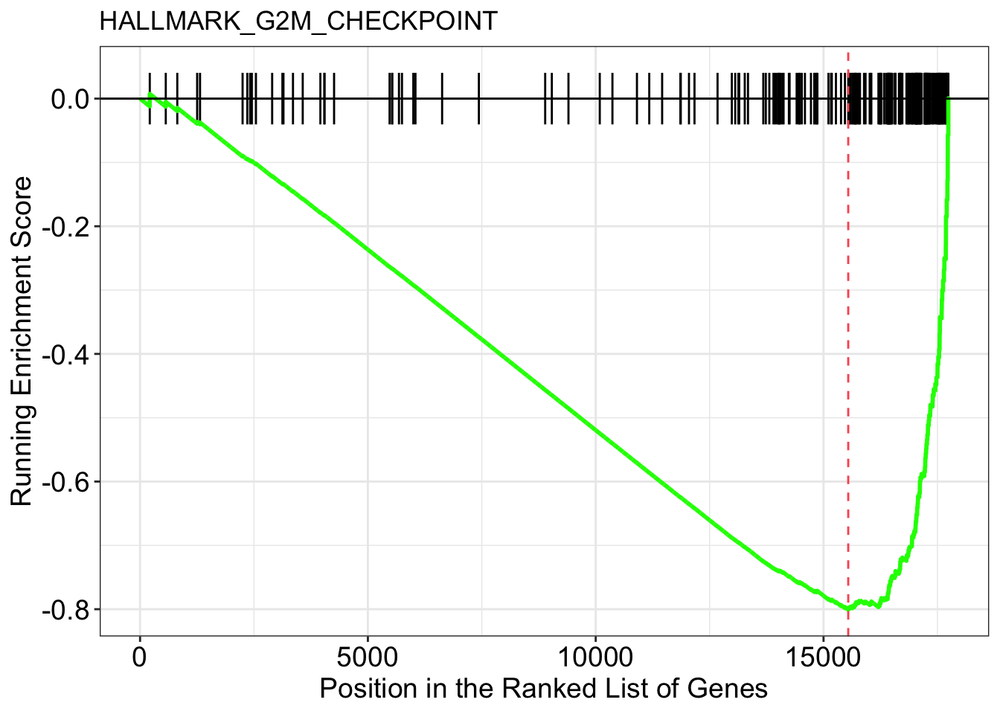
# save visualization in p2
p2 <- gseaplot(em2, geneSetID = "HALLMARK_HYPOXIA",
by = "runningScore", title = "HALLMARK_HYPOXIA")
p2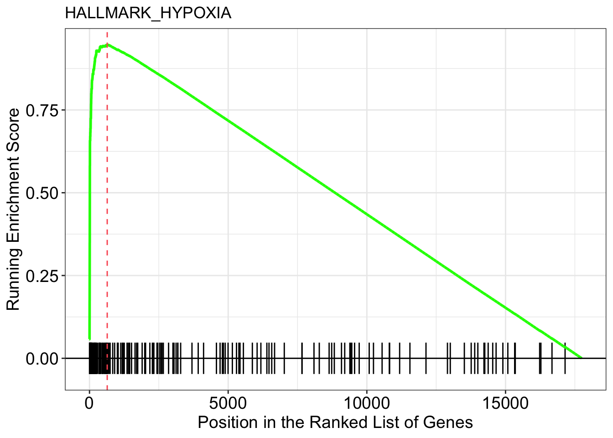
The X-axis is all your genes in the experiment (~ 20,000 in this case) pre-ranked by our metric. Each black bar is the gene in this gene set(pathway). You have an idea where are the genes located in the pre-ranked list.
Enrichment Score (ES) on the y-axis is calculated by some metric that ES is positive if the gene set is located at the top of the pre-ranked gene list. ES is negative if the gene set is located at the bottom of the pre-ranked gene list.
We see the hypoxia gene sets are at the front of the ranked list and the G2M gene sets are at the end of the ranked list.
This final step adds a vital dimension to our RNA-seq data analysis, enabling us to effectively convey the biological relevance of the enriched gene sets we’ve identified.
12.12.9 Conclusion
In conclusion, pathway analysis is a powerful tool in bioinformatics, providing crucial insights into the biological functions and processes associated with genes and proteins. This lesson covered two main types of pathway analysis: Over-Representation Analysis (ORA) and Gene Set Enrichment Analysis (GSEA).
Over-Representation Analysis (ORA) is best suited for scenarios where researchers have a specific list of genes of interest, such as differentially expressed genes (DEGs). ORA allows for the identification of pathways or functions that are significantly over-represented in this list, offering insights into the biological processes most affected by the condition or treatment under study.
Gene Set Enrichment Analysis (GSEA), on the other hand, is ideal for examining ranked lists of genes based on their association with a phenotype. Unlike ORA, GSEA does not rely on predefined cutoffs for significance and can provide a more nuanced view of how entire sets of genes related to specific biological processes or pathways are collectively associated with the phenotype.
Both ORA and GSEA are essential methods in bioinformatics, each serving different purposes:
ORA provides a focused view on specific sets of genes, making it ideal for studies where the list of genes of interest is well-defined.
GSEA offers a broader perspective, considering the entire spectrum of gene expression to reveal more subtle shifts in gene sets related to particular biological themes.
The choice between ORA and GSEA should be guided by the specific objectives of the research and the nature of the available data. By employing these methods, you can gain deeper insights into the complex interactions and functions of genes, leading to a better understanding of biological systems and the mechanisms underlying various conditions and diseases.
12.13 Congratulations for successfully completing this final project!
Your dedication and hard work have led you through a comprehensive journey in RNAseq data analysis, culminating in a thorough exploration of the hypoxia vs. normoxia comparison in the SW480 cell line.
Together, we’ve navigated the complexities of genomics data handling and analysis techniques, from cleaning and preparing metadata to identifying differentially expressed genes and visualizing gene expression patterns. Your commitment to mastering these skills is truly commendable.
As you move forward in your bioinformatics journey, remember that learning is a continuous process. The skills you’ve acquired here will serve as a solid foundation for tackling more advanced challenges in genomics and data analysis.
Don’t forget to utilize the Q&A section and comments for any lingering questions or clarifications. Your engagement with your peers and instructors enriches the learning experience for everyone involved.
12.13.1 Final words
Congratulations to all the students who have completed this enriching course on programming in biology with a focus on the R programming language! You’ve embarked on a fascinating journey into the world of computational analysis within the realm of biology, and you’ve successfully gained a valuable set of skills.
Throughout this course, we’ve covered a wide range of topics, starting with the fundamental concepts of programming. We’ve explored the core programming skills that are essential for any field, delving into variables, data types, and expressions.
The heart of the course introduced you to the powerful R programming language. You’ve learned basic data structures in R, and how to use R for data manipulation, analysis, and visualization – skills that are indispensable for working with complex biological data.
As you progressed, you delved into more advanced programming topics, and project management, and even explored the fascinating tidyverse ecosystem designed for data science.
We didn’t stop there. We ventured into the world of data visualization, a vital skill for interpreting and sharing your data findings effectively. You also gained insights into specific bioinformatics applications, from genomic data analysis to gene expression studies using Bioconductor packages.
The culmination of your journey was the capstone project, where you applied your newfound skills to tackle real-world biological challenges by analyzing RNAseq data.
In conclusion, you’ve equipped yourselves with a robust toolkit for programming, tailored to the intricate world of biology. These skills will serve as a strong foundation for your future endeavors in bioinformatics and computational biology.
Remember that your learning journey doesn’t end here. Keep exploring, keep studying, and keep pushing the boundaries of what you can achieve in the dynamic field of biological sciences.
It takes effort to be good at anything. You’ve gained the basic but practical skills. Keep practicing so you have a solid foundation. We encourage you to take on a real-world project and apply what you have learned to it. The best way to learn is by doing it.
12.13.2 Materials to read to uplift your R skills to the next level
Big book of R: The collection now stands at over 300 R books. Most of them are free.
Orchestrating Single-Cell Analysis with Bioconductor. If you want to learn to use R for single-cell analysis. This is the book you should read.
12.13.3 Coding Challenge
You have learned a lot! To challenge yourself after this course, you can try to finish this coding experience using TCGA data as well https://github.com/crazyhottommy/coding_exercise_TCGA_infiltration
It is a bit challenging and you can ask questions on the forum to get help.